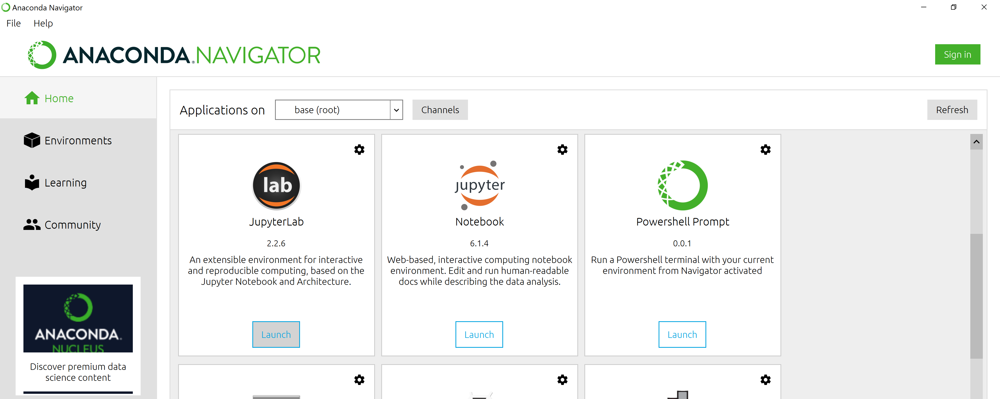
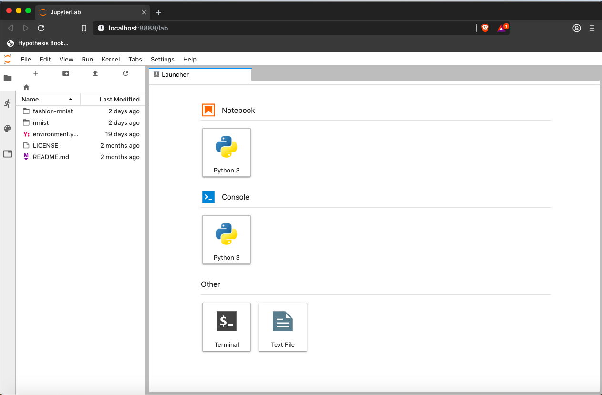
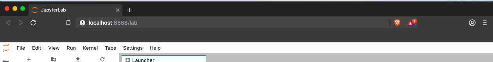
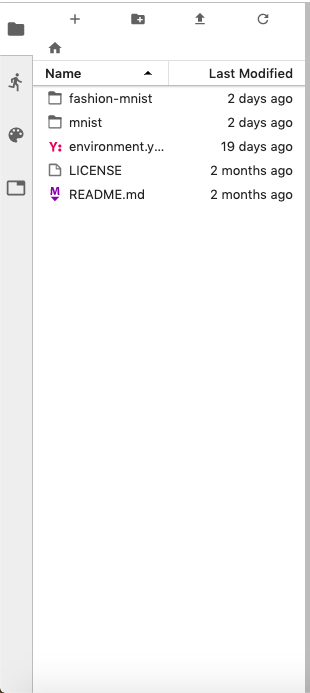
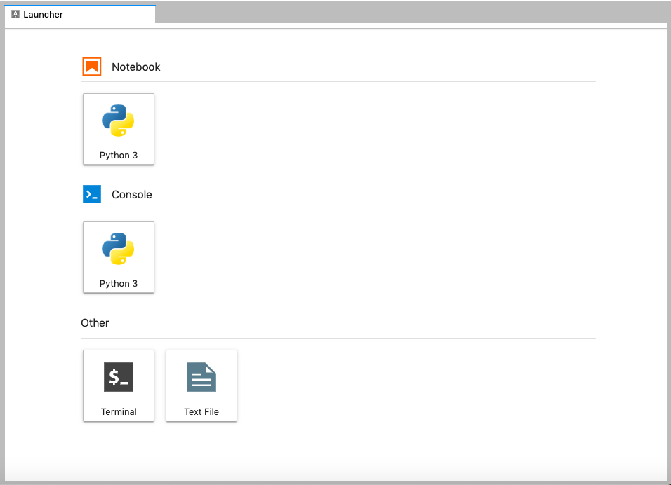
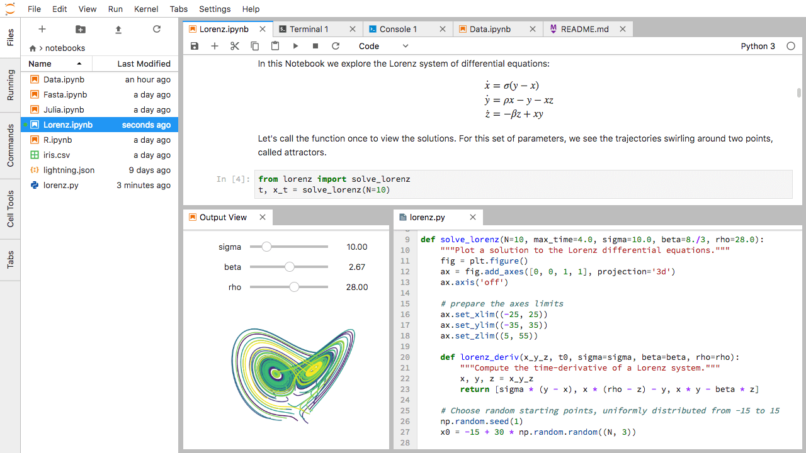

Content from Running and Quitting
Last updated on 2024-04-15 | Edit this page
Overview
Questions
- How can I run Python programs?
Objectives
- Launch the JupyterLab server.
- Create a new Python script.
- Create a Jupyter notebook.
- Shutdown the JupyterLab server.
- Understand the difference between a Python script and a Jupyter notebook.
- Create Markdown cells in a notebook.
- Create and run Python cells in a notebook.
To run Python, we are going to use Jupyter Notebooks via JupyterLab for the remainder of this workshop. Jupyter notebooks are common in data science and visualization and serve as a convenient common-denominator experience for running Python code interactively where we can easily view and share the results of our Python code.
There are other ways of editing, managing, and running code. Software developers often use an integrated development environment (IDE) like PyCharm or Visual Studio Code, or text editors like Vim or Emacs, to create and edit their Python programs. After editing and saving your Python programs you can execute those programs within the IDE itself or directly on the command line. In contrast, Jupyter notebooks let us execute and view the results of our Python code immediately within the notebook.
JupyterLab has several other handy features:
- You can easily type, edit, and copy and paste blocks of code.
- Tab complete allows you to easily access the names of things you are using and learn more about them.
- It allows you to annotate your code with links, different sized text, bullets, etc. to make it more accessible to you and your collaborators.
- It allows you to display figures next to the code that produces them to tell a complete story of the analysis.
Each notebook contains one or more cells that contain code, text, or images.
Getting Started with JupyterLab
JupyterLab is an application server with a web user interface from Project Jupyter that enables one to work with documents and activities such as Jupyter notebooks, text editors, terminals, and even custom components in a flexible, integrated, and extensible manner. JupyterLab requires a reasonably up-to-date browser (ideally a current version of Chrome, Safari, or Firefox); Internet Explorer versions 9 and below are not supported.
JupyterLab is included as part of the Anaconda Python distribution. If you have not already installed the Anaconda Python distribution, see the setup instructions for installation instructions.
In this lesson we will run JupyterLab locally on our own machines so it will not require an internet connection besides the initial connection to download and install Anaconda and JupyterLab
- Start the JupyterLab server on your machine
- Use a web browser to open a special localhost URL that connects to your JupyterLab server
- The JupyterLab server does the work and the web browser renders the result
- Type code into the browser and see the results after your JupyterLab server has finished executing your code
JupyterLab? What about Jupyter notebooks?
JupyterLab is the next stage in the evolution of the Jupyter Notebook. If you have prior experience working with Jupyter notebooks, then you will have a good idea of what to expect from JupyterLab.
Experienced users of Jupyter notebooks interested in a more detailed discussion of the similarities and differences between the JupyterLab and Jupyter notebook user interfaces can find more information in the JupyterLab user interface documentation.
Starting JupyterLab
You can start the JupyterLab server through the command line or
through an application called Anaconda Navigator. Anaconda
Navigator is included as part of the Anaconda Python distribution.
macOS - Command Line
To start the JupyterLab server you will need to access the command line through the Terminal. There are two ways to open Terminal on Mac.
- In your Applications folder, open Utilities and double-click on Terminal
- Press Command + spacebar to launch Spotlight.
Type
Terminaland then double-click the search result or hit Enter
After you have launched Terminal, type the command to launch the JupyterLab server.
Windows Users - Command Line
To start the JupyterLab server you will need to access the Anaconda Prompt.
Press Windows Logo Key and search for
Anaconda Prompt, click the result or press enter.
After you have launched the Anaconda Prompt, type the command:
Anaconda Navigator
To start a JupyterLab server from Anaconda Navigator you must first
start
Anaconda Navigator (click for detailed instructions on macOS, Windows,
and Linux). You can search for Anaconda Navigator via Spotlight on
macOS (Command + spacebar), the Windows search
function (Windows Logo Key) or opening a terminal shell and
executing the anaconda-navigator executable from the
command line.
After you have launched Anaconda Navigator, click the
Launch button under JupyterLab. You may need to scroll down
to find it.
Here is a screenshot of an Anaconda Navigator page similar to the one that should open on either macOS or Windows.

And here is a screenshot of a JupyterLab landing page that should be similar to the one that opens in your default web browser after starting the JupyterLab server on either macOS or Windows.

The JupyterLab Interface
JupyterLab has many features found in traditional integrated development environments (IDEs) but is focused on providing flexible building blocks for interactive, exploratory computing.
The JupyterLab Interface consists of the Menu Bar, a collapsable Left Side Bar, and the Main Work Area which contains tabs of documents and activities.
Menu Bar
The Menu Bar at the top of JupyterLab has the top-level menus that expose various actions available in JupyterLab along with their keyboard shortcuts (where applicable). The following menus are included by default.
- File: Actions related to files and directories such as New, Open, Close, Save, etc. The File menu also includes the Shut Down action used to shutdown the JupyterLab server.
- Edit: Actions related to editing documents and other activities such as Undo, Cut, Copy, Paste, etc.
- View: Actions that alter the appearance of JupyterLab.
- Run: Actions for running code in different activities such as notebooks and code consoles (discussed below).
- Kernel: Actions for managing kernels. Kernels in Jupyter will be explained in more detail below.
- Tabs: A list of the open documents and activities in the main work area.
- Settings: Common JupyterLab settings can be configured using this menu. There is also an Advanced Settings Editor option in the dropdown menu that provides more fine-grained control of JupyterLab settings and configuration options.
- Help: A list of JupyterLab and kernel help links.
Kernels
The JupyterLab docs define kernels as “separate processes started by the server that runs your code in different programming languages and environments.” When we open a Jupyter Notebook, that starts a kernel - a process - that is going to run the code. In this lesson, we’ll be using the Jupyter ipython kernel which lets us run Python 3 code interactively.
Using other Jupyter kernels for other programming languages would let us write and execute code in other programming languages in the same JupyterLab interface, like R, Java, Julia, Ruby, JavaScript, Fortran, etc.
A screenshot of the default Menu Bar is provided below.

Left Sidebar
The left sidebar contains a number of commonly used tabs, such as a file browser (showing the contents of the directory where the JupyterLab server was launched), a list of running kernels and terminals, the command palette, and a list of open tabs in the main work area. A screenshot of the default Left Side Bar is provided below.

The left sidebar can be collapsed or expanded by selecting “Show Left Sidebar” in the View menu or by clicking on the active sidebar tab.
Main Work Area
The main work area in JupyterLab enables you to arrange documents (notebooks, text files, etc.) and other activities (terminals, code consoles, etc.) into panels of tabs that can be resized or subdivided. A screenshot of the default Main Work Area is provided below.
If you do not see the Launcher tab, click the blue plus sign under the “File” and “Edit” menus and it will appear.

Drag a tab to the center of a tab panel to move the tab to the panel. Subdivide a tab panel by dragging a tab to the left, right, top, or bottom of the panel. The work area has a single current activity. The tab for the current activity is marked with a colored top border (blue by default).
Creating a Python script
- To start writing a new Python program click the Text File icon under
the Other header in the Launcher tab of the Main Work Area.
- You can also create a new plain text file by selecting the New -> Text File from the File menu in the Menu Bar.
- To convert this plain text file to a Python program, select the
Save File As action from the File menu in the Menu Bar
and give your new text file a name that ends with the
.pyextension.- The
.pyextension lets everyone (including the operating system) know that this text file is a Python program. - This is convention, not a requirement.
- The
Creating a Jupyter Notebook
To open a new notebook click the Python 3 icon under the Notebook header in the Launcher tab in the main work area. You can also create a new notebook by selecting New -> Notebook from the File menu in the Menu Bar.
Additional notes on Jupyter notebooks.
- Notebook files have the extension
.ipynbto distinguish them from plain-text Python programs. - Notebooks can be exported as Python scripts that can be run from the command line.
Below is a screenshot of a Jupyter notebook running inside JupyterLab. If you are interested in more details, then see the official notebook documentation.

How It’s Stored
- The notebook file is stored in a format called JSON.
- Just like a webpage, what’s saved looks different from what you see in your browser.
- But this format allows Jupyter to mix source code, text, and images, all in one file.
Arranging Documents into Panels of Tabs
In the JupyterLab Main Work Area you can arrange documents into panels of tabs. Here is an example from the official documentation.

First, create a text file, Python console, and terminal window and arrange them into three panels in the main work area. Next, create a notebook, terminal window, and text file and arrange them into three panels in the main work area. Finally, create your own combination of panels and tabs. What combination of panels and tabs do you think will be most useful for your workflow?
After creating the necessary tabs, you can drag one of the tabs to the center of a panel to move the tab to the panel; next you can subdivide a tab panel by dragging a tab to the left, right, top, or bottom of the panel.
Code vs. Text
Jupyter mixes code and text in different types of blocks, called cells. We often use the term “code” to mean “the source code of software written in a language such as Python”. A “code cell” in a Notebook is a cell that contains software; a “text cell” is one that contains ordinary prose written for human beings.
The Notebook has Command and Edit modes.
- If you press Esc and Return alternately, the outer border of your code cell will change from gray to blue.
- These are the Command (gray) and Edit (blue) modes of your notebook.
- Command mode allows you to edit notebook-level features, and Edit mode changes the content of cells.
- When in Command mode (esc/gray),
- The b key will make a new cell below the currently selected cell.
- The a key will make one above.
- The x key will delete the current cell.
- The z key will undo your last cell operation (which could be a deletion, creation, etc).
- All actions can be done using the menus, but there are lots of keyboard shortcuts to speed things up.
Command Vs. Edit
In the Jupyter notebook page are you currently in Command or Edit
mode?
Switch between the modes. Use the shortcuts to generate a new cell. Use
the shortcuts to delete a cell. Use the shortcuts to undo the last cell
operation you performed.
Command mode has a grey border and Edit mode has a blue border. Use Esc and Return to switch between modes. You need to be in Command mode (Press Esc if your cell is blue). Type b or a. You need to be in Command mode (Press Esc if your cell is blue). Type x. You need to be in Command mode (Press Esc if your cell is blue). Type z.
Use the keyboard and mouse to select and edit cells.
- Pressing the Return key turns the border blue and engages Edit mode, which allows you to type within the cell.
- Because we want to be able to write many lines of code in a single cell, pressing the Return key when in Edit mode (blue) moves the cursor to the next line in the cell just like in a text editor.
- We need some other way to tell the Notebook we want to run what’s in the cell.
- Pressing Shift+Return together will execute the contents of the cell.
- Notice that the Return and Shift keys on the right of the keyboard are right next to each other.
The Notebook will turn Markdown into pretty-printed documentation.
- Notebooks can also render Markdown.
- A simple plain-text format for writing lists, links, and other things that might go into a web page.
- Equivalently, a subset of HTML that looks like what you’d send in an old-fashioned email.
- Turn the current cell into a Markdown cell by entering the Command mode (Esc/gray) and press the M key.
-
In [ ]:will disappear to show it is no longer a code cell and you will be able to write in Markdown. - Turn the current cell into a Code cell by entering the Command mode (Esc/gray) and press the y key.
Markdown does most of what HTML does.
| Markdown code | Rendered output |
|---|---|
|
|
|
|
|
|
|
A Level-1 Heading |
|
A Level-2 Heading (etc.) |
|
Line breaks don’t matter. But blank lines create new paragraphs. |
|
Links are created with
|
Creating Lists in Markdown
Create a nested list in a Markdown cell in a notebook that looks like this:
- Get funding.
- Do work.
- Design experiment.
- Collect data.
- Analyze.
- Write up.
- Publish.
This challenge integrates both the numbered list and bullet list. Note that the bullet list is indented 2 spaces so that it is inline with the items of the numbered list.
1. Get funding.
2. Do work.
* Design experiment.
* Collect data.
* Analyze.
3. Write up.
4. Publish.Change an Existing Cell from Code to Markdown
What happens if you write some Python in a code cell and then you switch it to a Markdown cell? For example, put the following in a code cell:
And then run it with Shift+Return to be sure that it works as a code cell. Now go back to the cell and use Esc then m to switch the cell to Markdown and “run” it with Shift+Return. What happened and how might this be useful?
Equations
Standard Markdown (such as we’re using for these notes) won’t render equations, but the Notebook will. Create a new Markdown cell and enter the following:
$\sum_{i=1}^{N} 2^{-i} \approx 1$(It’s probably easier to copy and paste.) What does it display? What
do you think the underscore, _, circumflex, ^,
and dollar sign, $, do?
The notebook shows the equation as it would be rendered from LaTeX
equation syntax. The dollar sign, $, is used to tell
Markdown that the text in between is a LaTeX equation. If you’re not
familiar with LaTeX, underscore, _, is used for subscripts
and circumflex, ^, is used for superscripts. A pair of
curly braces, { and }, is used to group text
together so that the statement i=1 becomes the subscript
and N becomes the superscript. Similarly, -i
is in curly braces to make the whole statement the superscript for
2. \sum and \approx are LaTeX
commands for “sum over” and “approximate” symbols.
Closing JupyterLab
- From the Menu Bar select the “File” menu and then choose “Shut Down” at the bottom of the dropdown menu. You will be prompted to confirm that you wish to shutdown the JupyterLab server (don’t forget to save your work!). Click “Shut Down” to shutdown the JupyterLab server.
- To restart the JupyterLab server you will need to re-run the following command from a shell.
$ jupyter labClosing JupyterLab
Practice closing and restarting the JupyterLab server.
Key Points
- Python scripts are plain text files.
- Use the Jupyter Notebook for editing and running Python.
- The Notebook has Command and Edit modes.
- Use the keyboard and mouse to select and edit cells.
- The Notebook will turn Markdown into pretty-printed documentation.
- Markdown does most of what HTML does.
Content from Variables and Assignment
Last updated on 2023-05-02 | Edit this page
Overview
Questions
- How can I store data in programs?
Objectives
- Write programs that assign scalar values to variables and perform calculations with those values.
- Correctly trace value changes in programs that use scalar assignment.
Use variables to store values.
Variables are names for values.
-
Variable names
- can only contain letters, digits, and underscore
_(typically used to separate words in long variable names) - cannot start with a digit
- are case sensitive (age, Age and AGE are three different variables)
- can only contain letters, digits, and underscore
The name should also be meaningful so you or another programmer know what it is
Variable names that start with underscores like
__alistairs_real_agehave a special meaning so we won’t do that until we understand the convention.In Python the
=symbol assigns the value on the right to the name on the left.The variable is created when a value is assigned to it.
-
Here, Python assigns an age to a variable
ageand a name in quotes to a variablefirst_name.
Use print to display values.
- Python has a built-in function called
printthat prints things as text. - Call the function (i.e., tell Python to run it) by using its name.
- Provide values to the function (i.e., the things to print) in parentheses.
- To add a string to the printout, wrap the string in single or double quotes.
- The values passed to the function are called arguments
OUTPUT
Ahmed is 42 years old-
printautomatically puts a single space between items to separate them. - And wraps around to a new line at the end.
Variables must be created before they are used.
- If a variable doesn’t exist yet, or if the name has been mis-spelled, Python reports an error. (Unlike some languages, which “guess” a default value.)
ERROR
---------------------------------------------------------------------------
NameError Traceback (most recent call last)
<ipython-input-1-c1fbb4e96102> in <module>()
----> 1 print(last_name)
NameError: name 'last_name' is not defined- The last line of an error message is usually the most informative.
- We will look at error messages in detail later.
Variables Persist Between Cells
Be aware that it is the order of execution of cells that is important in a Jupyter notebook, not the order in which they appear. Python will remember all the code that was run previously, including any variables you have defined, irrespective of the order in the notebook. Therefore if you define variables lower down the notebook and then (re)run cells further up, those defined further down will still be present. As an example, create two cells with the following content, in this order:
If you execute this in order, the first cell will give an error.
However, if you run the first cell after the second cell it
will print out 1. To prevent confusion, it can be helpful
to use the Kernel -> Restart & Run All
option which clears the interpreter and runs everything from a clean
slate going top to bottom.
Variables can be used in calculations.
- We can use variables in calculations just as if they were values.
- Remember, we assigned the value
42toagea few lines ago.
- Remember, we assigned the value
OUTPUT
Age in three years: 45Use an index to get a single character from a string.
- The characters (individual letters, numbers, and so on) in a string
are ordered. For example, the string
'AB'is not the same as'BA'. Because of this ordering, we can treat the string as a list of characters. - Each position in the string (first, second, etc.) is given a number. This number is called an index or sometimes a subscript.
- Indices are numbered from 0.
- Use the position’s index in square brackets to get the character at that position.
OUTPUT
hUse a slice to get a substring.
- A part of a string is called a substring. A substring can be as short as a single character.
- An item in a list is called an element. Whenever we treat a string as if it were a list, the string’s elements are its individual characters.
- A slice is a part of a string (or, more generally, a part of any list-like thing).
- We take a slice with the notation
[start:stop], wherestartis the integer index of the first element we want andstopis the integer index of the element just after the last element we want. - The difference between
stopandstartis the slice’s length. - Taking a slice does not change the contents of the original string. Instead, taking a slice returns a copy of part of the original string.
OUTPUT
sodUse the built-in function len to find the length of a
string.
OUTPUT
6- Nested functions are evaluated from the inside out, like in mathematics.
Python is case-sensitive.
- Python thinks that upper- and lower-case letters are different, so
Nameandnameare different variables. - There are conventions for using upper-case letters at the start of variable names so we will use lower-case letters for now.
Use meaningful variable names.
- Python doesn’t care what you call variables as long as they obey the rules (alphanumeric characters and the underscore).
- Use meaningful variable names to help other people understand what the program does.
- The most important “other person” is your future self.
OUTPUT
# Command # Value of x # Value of y # Value of swap #
x = 1.0 # 1.0 # not defined # not defined #
y = 3.0 # 1.0 # 3.0 # not defined #
swap = x # 1.0 # 3.0 # 1.0 #
x = y # 3.0 # 3.0 # 1.0 #
y = swap # 3.0 # 1.0 # 1.0 #These three lines exchange the values in x and
y using the swap variable for temporary
storage. This is a fairly common programming idiom.
Challenge
If you assign a = 123, what happens if you try to get
the second digit of a via a[1]?
Numbers are not strings or sequences and Python will raise an error
if you try to perform an index operation on a number. In the next lesson on types and type
conversion we will learn more about types and how to convert between
different types. If you want the Nth digit of a number you can convert
it into a string using the str built-in function and then
perform an index operation on that string.
ERROR
TypeError: 'int' object is not subscriptableOUTPUT
2Choosing a Name
Which is a better variable name, m, min, or
minutes? Why? Hint: think about which code you would rather
inherit from someone who is leaving the lab:
ts = m * 60 + stot_sec = min * 60 + sectotal_seconds = minutes * 60 + seconds
minutes is better because min might mean
something like “minimum” (and actually is an existing built-in function
in Python that we will cover later).
OUTPUT
atom_name[1:3] is: arSlicing concepts
Given the following string:
What would these expressions return?
species_name[2:8]-
species_name[11:](without a value after the colon) -
species_name[:4](without a value before the colon) -
species_name[:](just a colon) species_name[11:-3]species_name[-5:-3]- What happens when you choose a
stopvalue which is out of range? (i.e., tryspecies_name[0:20]orspecies_name[:103])
-
species_name[2:8]returns the substring'acia b' -
species_name[11:]returns the substring'folia', from position 11 until the end -
species_name[:4]returns the substring'Acac', from the start up to but not including position 4 -
species_name[:]returns the entire string'Acacia buxifolia' -
species_name[11:-3]returns the substring'fo', from the 11th position to the third last position -
species_name[-5:-3]also returns the substring'fo', from the fifth last position to the third last - If a part of the slice is out of range, the operation does not fail.
species_name[0:20]gives the same result asspecies_name[0:], andspecies_name[:103]gives the same result asspecies_name[:]
Key Points
- Use variables to store values.
- Use
printto display values. - Variables persist between cells.
- Variables must be created before they are used.
- Variables can be used in calculations.
- Use an index to get a single character from a string.
- Use a slice to get a substring.
- Use the built-in function
lento find the length of a string. - Python is case-sensitive.
- Use meaningful variable names.
Content from Data Types and Type Conversion
Last updated on 2023-05-02 | Edit this page
Overview
Questions
- What kinds of data do programs store?
- How can I convert one type to another?
Objectives
- Explain key differences between integers and floating point numbers.
- Explain key differences between numbers and character strings.
- Use built-in functions to convert between integers, floating point numbers, and strings.
Every value has a type.
- Every value in a program has a specific type.
- Integer (
int): represents positive or negative whole numbers like 3 or -512. - Floating point number (
float): represents real numbers like 3.14159 or -2.5. - Character string (usually called “string”,
str): text.- Written in either single quotes or double quotes (as long as they match).
- The quote marks aren’t printed when the string is displayed.
Use the built-in function type to find the type of a
value.
- Use the built-in function
typeto find out what type a value has. - Works on variables as well.
- But remember: the value has the type — the variable is just a label.
OUTPUT
<class 'int'>OUTPUT
<class 'str'>Types control what operations (or methods) can be performed on a given value.
- A value’s type determines what the program can do to it.
OUTPUT
2ERROR
---------------------------------------------------------------------------
TypeError Traceback (most recent call last)
<ipython-input-2-67f5626a1e07> in <module>()
----> 1 print('hello' - 'h')
TypeError: unsupported operand type(s) for -: 'str' and 'str'You can use the “+” and “*” operators on strings.
- “Adding” character strings concatenates them.
OUTPUT
Ahmed Walsh- Multiplying a character string by an integer N creates a
new string that consists of that character string repeated N
times.
- Since multiplication is repeated addition.
OUTPUT
==========Strings have a length (but numbers don’t).
- The built-in function
lencounts the number of characters in a string.
OUTPUT
11- But numbers don’t have a length (not even zero).
ERROR
---------------------------------------------------------------------------
TypeError Traceback (most recent call last)
<ipython-input-3-f769e8e8097d> in <module>()
----> 1 print(len(52))
TypeError: object of type 'int' has no len()Must convert numbers to strings or vice versa when operating on them.
- Cannot add numbers and strings.
ERROR
---------------------------------------------------------------------------
TypeError Traceback (most recent call last)
<ipython-input-4-fe4f54a023c6> in <module>()
----> 1 print(1 + '2')
TypeError: unsupported operand type(s) for +: 'int' and 'str'- Not allowed because it’s ambiguous: should
1 + '2'be3or'12'? - Some types can be converted to other types by using the type name as a function.
OUTPUT
3
12Can mix integers and floats freely in operations.
- Integers and floating-point numbers can be mixed in arithmetic.
- Python 3 automatically converts integers to floats as needed.
OUTPUT
half is 0.5
three squared is 9.0Variables only change value when something is assigned to them.
- If we make one cell in a spreadsheet depend on another, and update the latter, the former updates automatically.
- This does not happen in programming languages.
PYTHON
variable_one = 1
variable_two = 5 * variable_one
variable_one = 2
print('first is', variable_one, 'and second is', variable_two)OUTPUT
first is 2 and second is 5- The computer reads the value of
variable_onewhen doing the multiplication, creates a new value, and assigns it tovariable_two. - Afterwards, the value of
variable_twois set to the new value and not dependent onvariable_oneso its value does not automatically change whenvariable_onechanges.
Fractions
What type of value is 3.4? How can you find out?
Automatic Type Conversion
What type of value is 3.25 + 4?
Choose a Type
What type of value (integer, floating point number, or character string) would you use to represent each of the following? Try to come up with more than one good answer for each problem. For example, in # 1, when would counting days with a floating point variable make more sense than using an integer?
- Number of days since the start of the year.
- Time elapsed from the start of the year until now in days.
- Serial number of a piece of lab equipment.
- A lab specimen’s age
- Current population of a city.
- Average population of a city over time.
The answers to the questions are:
- Integer, since the number of days would lie between 1 and 365.
- Floating point, since fractional days are required
- Character string if serial number contains letters and numbers, otherwise integer if the serial number consists only of numerals
- This will vary! How do you define a specimen’s age? whole days since collection (integer)? date and time (string)?
- Choose floating point to represent population as large aggregates (eg millions), or integer to represent population in units of individuals.
- Floating point number, since an average is likely to have a fractional part.
Division Types
In Python 3, the // operator performs integer
(whole-number) floor division, the / operator performs
floating-point division, and the % (or modulo)
operator calculates and returns the remainder from integer division:
OUTPUT
5 // 3: 1
5 / 3: 1.6666666666666667
5 % 3: 2If num_subjects is the number of subjects taking part in
a study, and num_per_survey is the number that can take
part in a single survey, write an expression that calculates the number
of surveys needed to reach everyone once.
We want the minimum number of surveys that reaches everyone once,
which is the rounded up value of
num_subjects/ num_per_survey. This is equivalent to
performing a floor division with // and adding 1. Before
the division we need to subtract 1 from the number of subjects to deal
with the case where num_subjects is evenly divisible by
num_per_survey.
PYTHON
num_subjects = 600
num_per_survey = 42
num_surveys = (num_subjects - 1) // num_per_survey + 1
print(num_subjects, 'subjects,', num_per_survey, 'per survey:', num_surveys)OUTPUT
600 subjects, 42 per survey: 15Strings to Numbers
Where reasonable, float() will convert a string to a
floating point number, and int() will convert a floating
point number to an integer:
OUTPUT
string to float: 3.4
float to int: 3If the conversion doesn’t make sense, however, an error message will occur.
ERROR
---------------------------------------------------------------------------
ValueError Traceback (most recent call last)
<ipython-input-5-df3b790bf0a2> in <module>
----> 1 print("string to float:", float("Hello world!"))
ValueError: could not convert string to float: 'Hello world!'Given this information, what do you expect the following program to do?
What does it actually do?
Why do you think it does that?
What do you expect this program to do? It would not be so
unreasonable to expect the Python 3 int command to convert
the string “3.4” to 3.4 and an additional type conversion to 3. After
all, Python 3 performs a lot of other magic - isn’t that part of its
charm?
OUTPUT
---------------------------------------------------------------------------
ValueError Traceback (most recent call last)
<ipython-input-2-ec6729dfccdc> in <module>
----> 1 int("3.4")
ValueError: invalid literal for int() with base 10: '3.4'However, Python 3 throws an error. Why? To be consistent, possibly. If you ask Python to perform two consecutive typecasts, you must convert it explicitly in code.
OUTPUT
3Arithmetic with Different Types
Answer: 1 and 4
Complex Numbers
Python provides complex numbers, which are written as
1.0+2.0j. If val is a complex number, its real
and imaginary parts can be accessed using dot notation as
val.real and val.imag.
OUTPUT
6.0
2.0- Why do you think Python uses
jinstead ofifor the imaginary part? - What do you expect
1 + 2j + 3to produce? - What do you expect
4jto be? What about4 jor4 + j?
- Standard mathematics treatments typically use
ito denote an imaginary number. However, from media reports it was an early convention established from electrical engineering that now presents a technically expensive area to change. Stack Overflow provides additional explanation and discussion. (4+2j)-
4jandSyntax Error: invalid syntax. In the latter cases,jis considered a variable and the statement depends on ifjis defined and if so, its assigned value.
Key Points
- Every value has a type.
- Use the built-in function
typeto find the type of a value. - Types control what operations can be done on values.
- Strings can be added and multiplied.
- Strings have a length (but numbers don’t).
- Must convert numbers to strings or vice versa when operating on them.
- Can mix integers and floats freely in operations.
- Variables only change value when something is assigned to them.
Content from Built-in Functions and Help
Last updated on 2025-03-14 | Edit this page
Overview
Questions
- How can I use built-in functions?
- How can I find out what they do?
- What kind of errors can occur in programs?
Objectives
- Explain the purpose of functions.
- Correctly call built-in Python functions.
- Correctly nest calls to built-in functions.
- Use help to display documentation for built-in functions.
- Correctly describe situations in which SyntaxError and NameError occur.
Use comments to add documentation to programs.
A function may take zero or more arguments.
- We have seen some functions already — now let’s take a closer look.
- An argument is a value passed into a function.
-
lentakes exactly one. -
int,str, andfloatcreate a new value from an existing one. -
printtakes zero or more. -
printwith no arguments prints a blank line.- Must always use parentheses, even if they’re empty, so that Python knows a function is being called.
OUTPUT
before
afterEvery function returns something.
- Every function call produces some result.
- If the function doesn’t have a useful result to return, it usually
returns the special value
None.Noneis a Python object that stands in anytime there is no value.
OUTPUT
example
result of print is NoneCommonly-used built-in functions include max,
min, and round.
- Use
maxto find the largest value of one or more values. - Use
minto find the smallest. - Both work on character strings as well as numbers.
- “Larger” and “smaller” use (0-9, A-Z, a-z) to compare letters.
OUTPUT
3
0Functions may only work for certain (combinations of) arguments.
-
maxandminmust be given at least one argument.- “Largest of the empty set” is a meaningless question.
- And they must be given things that can meaningfully be compared.
ERROR
TypeError Traceback (most recent call last)
<ipython-input-52-3f049acf3762> in <module>
----> 1 print(max(1, 'a'))
TypeError: '>' not supported between instances of 'str' and 'int'Functions may have default values for some arguments.
-
roundwill round off a floating-point number. - By default, rounds to zero decimal places.
OUTPUT
4- We can specify the number of decimal places we want.
OUTPUT
3.7Functions attached to objects are called methods
- Functions take another form that will be common in the pandas episodes.
- Methods have parentheses like functions, but come after the variable.
- Some methods are used for internal Python operations, and are marked with double underlines.
PYTHON
my_string = 'Hello world!' # creation of a string object
print(len(my_string)) # the len function takes a string as an argument and returns the length of the string
print(my_string.swapcase()) # calling the swapcase method on the my_string object
print(my_string.__len__()) # calling the internal __len__ method on the my_string object, used by len(my_string)OUTPUT
12
hELLO WORLD!
12- You might even see them chained together. They operate left to right.
PYTHON
print(my_string.isupper()) # Not all the letters are uppercase
print(my_string.upper()) # This capitalizes all the letters
print(my_string.upper().isupper()) # Now all the letters are uppercaseOUTPUT
False
HELLO WORLD
TrueUse the built-in function help to get help for a
function.
- Every built-in function has online documentation.
OUTPUT
Help on built-in function round in module builtins:
round(number, ndigits=None)
Round a number to a given precision in decimal digits.
The return value is an integer if ndigits is omitted or None. Otherwise
the return value has the same type as the number. ndigits may be negative.The Jupyter Notebook has two ways to get help.
- Option 1: Place the cursor near where the function is invoked in a
cell (i.e., the function name or its parameters),
- Hold down Shift, and press Tab.
- Do this several times to expand the information returned.
- Option 2: Type the function name in a cell with a question mark after it. Then run the cell.
Python reports a syntax error when it can’t understand the source of a program.
- Won’t even try to run the program if it can’t be parsed.
ERROR
File "<ipython-input-56-f42768451d55>", line 2
name = 'Feng
^
SyntaxError: EOL while scanning string literalERROR
File "<ipython-input-57-ccc3df3cf902>", line 2
age = = 52
^
SyntaxError: invalid syntax- Look more closely at the error message:
ERROR
File "<ipython-input-6-d1cc229bf815>", line 1
print ("hello world"
^
SyntaxError: unexpected EOF while parsing- The message indicates a problem on first line of the input (“line
1”).
- In this case the “ipython-input” section of the file name tells us that we are working with input into IPython, the Python interpreter used by the Jupyter Notebook.
- The
-6-part of the filename indicates that the error occurred in cell 6 of our Notebook. - Next is the problematic line of code, indicating the problem with a
^pointer.
Python reports a runtime error when something goes wrong while a program is executing.
ERROR
NameError Traceback (most recent call last)
<ipython-input-59-1214fb6c55fc> in <module>
1 age = 53
----> 2 remaining = 100 - aege # mis-spelled 'age'
NameError: name 'aege' is not defined- Fix syntax errors by reading the source and runtime errors by tracing execution.
Other ways to get help
There are several other ways that people often get help when they are stuck with their Python code.
- Search the internet: paste the last line of your error message or the word “python” and a short description of what you want to do into your favourite search engine and you will usually find several examples where other people have encountered the same problem and came looking for help.
- StackOverflow can be particularly helpful for this: answers to questions are presented as a ranked thread ordered according to how useful other users found them to be.
- Take care: copying and pasting code written by somebody else is risky unless you understand exactly what it is doing!
- ask somebody “in the real world”. If you have a colleague or friend with more expertise in Python than you have, show them the problem you are having and ask them for help.
- Sometimes, simply the act of formulating your question can help you to identify what is going wrong. This is known as “rubber duck debugging” among programmers.
Generative AI
It is increasingly common for people to use generative AI chatbots such as ChatGPT to get help while coding. Once again, you will probably receive some useful guidance by presenting your error message to the chatbot and asking it what went wrong. However, the way this help is provided by the chatbot is different. Answers on Stackoverflow have (probably) been given by a human as a direct response to the question asked. But generative AI chatbots, which are built on an advanced statistical model based on oberservations or which combinations of words tend to appear together, respond by generating the most likely sequence of text that would follow the prompt they are given.
In many cases, these responses will be as accurate as those you could find online, but responses from a chatbot can and often do include errors. Just as with an answer found on the internet, you should take care to ensure you understand what any code the tool has suggested is going to do when it is run. You will need knowledge and skills to be able to understand the responses you get from these tools, to judge whether or not they are accurate, and to fix any errors in the code it may offer you.
In addition to asking for help, programmers use generative AI tools to generate code from scratch, extend, improve and reorganise existing code, translate code between programming languages, figure out what terms to use in a search of the internet, and more. However, there are drawbacks that you should be aware of.
The models used by these tools have been “trained” on enormous volumes of data, much of it taken from the internet, and the responses they produce reflect that training data. Very large amounts of energy was consumed when training most of the models in widespread use and many people are concerned about the environmental cost of this. Concerns also exist about the way the data for this training was obtained, with questions raised about whether the developers had permission to use it. Other ethical concerns have also been raised, such as reports that workers were exploited during the training process.
We recommend that you avoid getting help from generative AI while you learn to code for several reasons:
- For most problems you will encounter at this stage, help and answers can be easily found by searching the internet.
- The foundational knowledge and skills you will learn in this lesson are essential for you to be able to fix your own programs and any code you receive from online help or a generative AI chatbot. If you choose to use these tools in the future, the expertise you gain from learning and practising these fundamentals on your own will help you use them more effectively.
- As you start out with programming, the mistakes you make will be the kinds that have also been made – and overcome! – by everybody else who learned to program before you. Since these mistakes and the questions you are likely to have at this stage are common, they are also better represented than other, more specialised problems and tasks in the data that was used to train generative AI tools. This means that a generative AI chatbot is more likely to produce accurate responses to questions that novices ask, which could give you a false impression of how reliable they will be when you are ready to do things that are more advanced.
What Happens When
- Order of operations:
1.1 * radiance = 1.11.1 - 0.5 = 0.6min(radiance, 0.6) = 0.62.0 + 0.6 = 2.6max(2.1, 2.6) = 2.6- At the end,
radiance = 2.6
Spot the Difference
- Predict what each of the
printstatements in the program below will print. - Does
max(len(rich), poor)run or produce an error message? If it runs, does its result make any sense?
OUTPUT
cOUTPUT
tinOUTPUT
4max(len(rich), poor) throws a TypeError. This turns into
max(4, 'tin') and as we discussed earlier a string and
integer cannot meaningfully be compared.
ERROR
TypeError Traceback (most recent call last)
<ipython-input-65-bc82ad05177a> in <module>
----> 1 max(len(rich), poor)
TypeError: '>' not supported between instances of 'str' and 'int'Why Not?
Why is it that max and min do not return
None when they are called with no arguments?
max and min return TypeErrors in this case
because the correct number of parameters was not supplied. If it just
returned None, the error would be much harder to trace as
it would likely be stored into a variable and used later in the program,
only to likely throw a runtime error.
Last Character of a String
If Python starts counting from zero, and len returns the
number of characters in a string, what index expression will get the
last character in the string name? (Note: we will see a
simpler way to do this in a later episode.)
name[len(name) - 1]
Explore the Python docs!
The official Python documentation is arguably the most complete source of information about the language. It is available in different languages and contains a lot of useful resources. The Built-in Functions page contains a catalogue of all of these functions, including the ones that we’ve covered in this lesson. Some of these are more advanced and unnecessary at the moment, but others are very simple and useful.
Key Points
- Use comments to add documentation to programs.
- A function may take zero or more arguments.
- Commonly-used built-in functions include
max,min, andround. - Functions may only work for certain (combinations of) arguments.
- Functions may have default values for some arguments.
- Use the built-in function
helpto get help for a function. - The Jupyter Notebook has two ways to get help.
- Every function returns something.
- Python reports a syntax error when it can’t understand the source of a program.
- Python reports a runtime error when something goes wrong while a program is executing.
- Fix syntax errors by reading the source code, and runtime errors by tracing the program’s execution.
Content from Morning Coffee
Last updated on 2023-05-02 | Edit this page
Reflection exercise
Over coffee, reflect on and discuss the following:
- What are the different kinds of errors Python will report?
- Did the code always produce the results you expected? If not, why?
- Is there something we can do to prevent errors when we write code?
Content from Libraries
Last updated on 2023-05-02 | Edit this page
Overview
Questions
- How can I use software that other people have written?
- How can I find out what that software does?
Objectives
- Explain what software libraries are and why programmers create and use them.
- Write programs that import and use modules from Python’s standard library.
- Find and read documentation for the standard library interactively (in the interpreter) and online.
Most of the power of a programming language is in its libraries.
- A library is a collection of files (called
modules) that contains functions for use by other programs.
- May also contain data values (e.g., numerical constants) and other things.
- Library’s contents are supposed to be related, but there’s no way to enforce that.
- The Python standard library is an extensive suite of modules that comes with Python itself.
- Many additional libraries are available from PyPI (the Python Package Index).
- We will see later how to write new libraries.
Libraries and modules
A library is a collection of modules, but the terms are often used interchangeably, especially since many libraries only consist of a single module, so don’t worry if you mix them.
A program must import a library module before using it.
- Use
importto load a library module into a program’s memory. - Then refer to things from the module as
module_name.thing_name.- Python uses
.to mean “part of”.
- Python uses
- Using
math, one of the modules in the standard library:
OUTPUT
pi is 3.141592653589793
cos(pi) is -1.0- Have to refer to each item with the module’s name.
-
math.cos(pi)won’t work: the reference topidoesn’t somehow “inherit” the function’s reference tomath.
-
Use help to learn about the contents of a library
module.
- Works just like help for a function.
OUTPUT
Help on module math:
NAME
math
MODULE REFERENCE
http://docs.python.org/3/library/math
The following documentation is automatically generated from the Python
source files. It may be incomplete, incorrect or include features that
are considered implementation detail and may vary between Python
implementations. When in doubt, consult the module reference at the
location listed above.
DESCRIPTION
This module is always available. It provides access to the
mathematical functions defined by the C standard.
FUNCTIONS
acos(x, /)
Return the arc cosine (measured in radians) of x.
⋮ ⋮ ⋮Import specific items from a library module to shorten programs.
- Use
from ... import ...to load only specific items from a library module. - Then refer to them directly without library name as prefix.
OUTPUT
cos(pi) is -1.0Create an alias for a library module when importing it to shorten programs.
- Use
import ... as ...to give a library a short alias while importing it. - Then refer to items in the library using that shortened name.
OUTPUT
cos(pi) is -1.0- Commonly used for libraries that are frequently used or have long
names.
- E.g., the
matplotlibplotting library is often aliased asmpl.
- E.g., the
- But can make programs harder to understand, since readers must learn your program’s aliases.
Exploring the Math Module
- What function from the
mathmodule can you use to calculate a square root without usingsqrt? - Since the library contains this function, why does
sqrtexist?
Using
help(math)we see that we’ve gotpow(x,y)in addition tosqrt(x), so we could usepow(x, 0.5)to find a square root.The
sqrt(x)function is arguably more readable thanpow(x, 0.5)when implementing equations. Readability is a cornerstone of good programming, so it makes sense to provide a special function for this specific common case.
Also, the design of Python’s math library has its origin
in the C standard, which includes both sqrt(x) and
pow(x,y), so a little bit of the history of programming is
showing in Python’s function names.
Locating the Right Module
You want to select a random character from a string:
- Which standard library module could help you?
- Which function would you select from that module? Are there alternatives?
- Try to write a program that uses the function.
The random module seems like it could help.
The string has 11 characters, each having a positional index from 0
to 10. You could use the random.randrange
or random.randint
functions to get a random integer between 0 and 10, and then select the
bases character at that index:
or more compactly:
Perhaps you found the random.sample
function? It allows for slightly less typing but might be a bit harder
to understand just by reading:
Note that this function returns a list of values. We will learn about lists in episode 11.
The simplest and shortest solution is the random.choice
function that does exactly what we want:
Jigsaw Puzzle (Parson’s Problem) Programming Example
Rearrange the following statements so that a random DNA base is printed and its index in the string. Not all statements may be needed. Feel free to use/add intermediate variables.
When Is Help Available?
When a colleague of yours types help(math), Python
reports an error:
ERROR
NameError: name 'math' is not definedWhat has your colleague forgotten to do?
Importing the math module (import math)
can be written as
Since you just wrote the code and are familiar with it, you might actually find the first version easier to read. But when trying to read a huge piece of code written by someone else, or when getting back to your own huge piece of code after several months, non-abbreviated names are often easier, except where there are clear abbreviation conventions.
There Are Many Ways To Import Libraries!
Match the following print statements with the appropriate library calls.
Print commands:
print("sin(pi/2) =", sin(pi/2))print("sin(pi/2) =", m.sin(m.pi/2))print("sin(pi/2) =", math.sin(math.pi/2))
Library calls:
from math import sin, piimport mathimport math as mfrom math import *
- Library calls 1 and 4. In order to directly refer to
sinandpiwithout the library name as prefix, you need to use thefrom ... import ...statement. Whereas library call 1 specifically imports the two functionssinandpi, library call 4 imports all functions in themathmodule. - Library call 3. Here
sinandpiare referred to with a shortened library nameminstead ofmath. Library call 3 does exactly that using theimport ... as ...syntax - it creates an alias formathin the form of the shortened namem. - Library call 2. Here
sinandpiare referred to with the regular library namemath, so the regularimport ...call suffices.
Note: although library call 4 works, importing all
names from a module using a wildcard import is not recommended as it makes it
unclear which names from the module are used in the code. In general it
is best to make your imports as specific as possible and to only import
what your code uses. In library call 1, the import
statement explicitly tells us that the sin function is
imported from the math module, but library call 4 does not
convey this information.
Most likely you find this version easier to read since it’s less
dense. The main reason not to use this form of import is to avoid name
clashes. For instance, you wouldn’t import degrees this way
if you also wanted to use the name degrees for a variable
or function of your own. Or if you were to also import a function named
degrees from another library.
OUTPUT
---------------------------------------------------------------------------
ValueError Traceback (most recent call last)
<ipython-input-1-d72e1d780bab> in <module>
1 from math import log
----> 2 log(0)
ValueError: math domain error- The logarithm of
xis only defined forx > 0, so 0 is outside the domain of the function. - You get an error of type
ValueError, indicating that the function received an inappropriate argument value. The additional message “math domain error” makes it clearer what the problem is.
Key Points
- Most of the power of a programming language is in its libraries.
- A program must import a library module in order to use it.
- Use
helpto learn about the contents of a library module. - Import specific items from a library to shorten programs.
- Create an alias for a library when importing it to shorten programs.
Content from Reading Tabular Data into DataFrames
Last updated on 2023-05-02 | Edit this page
Overview
Questions
- How can I read tabular data?
Objectives
- Import the Pandas library.
- Use Pandas to load a simple CSV data set.
- Get some basic information about a Pandas DataFrame.
Use the Pandas library to do statistics on tabular data.
- Pandas is a widely-used Python library for statistics, particularly on tabular data.
- Borrows many features from R’s dataframes.
- A 2-dimensional table whose columns have names and potentially have different data types.
- Load Pandas with
import pandas as pd. The aliaspdis commonly used to refer to the Pandas library in code. - Read a Comma Separated Values (CSV) data file with
pd.read_csv.- Argument is the name of the file to be read.
- Returns a dataframe that you can assign to a variable
PYTHON
import pandas as pd
data_oceania = pd.read_csv('data/gapminder_gdp_oceania.csv')
print(data_oceania)OUTPUT
country gdpPercap_1952 gdpPercap_1957 gdpPercap_1962 \
0 Australia 10039.59564 10949.64959 12217.22686
1 New Zealand 10556.57566 12247.39532 13175.67800
gdpPercap_1967 gdpPercap_1972 gdpPercap_1977 gdpPercap_1982 \
0 14526.12465 16788.62948 18334.19751 19477.00928
1 14463.91893 16046.03728 16233.71770 17632.41040
gdpPercap_1987 gdpPercap_1992 gdpPercap_1997 gdpPercap_2002 \
0 21888.88903 23424.76683 26997.93657 30687.75473
1 19007.19129 18363.32494 21050.41377 23189.80135
gdpPercap_2007
0 34435.36744
1 25185.00911- The columns in a dataframe are the observed variables, and the rows are the observations.
- Pandas uses backslash
\to show wrapped lines when output is too wide to fit the screen. - Using descriptive dataframe names helps us distinguish between multiple dataframes so we won’t accidentally overwrite a dataframe or read from the wrong one.
File Not Found
Our lessons store their data files in a data
sub-directory, which is why the path to the file is
data/gapminder_gdp_oceania.csv. If you forget to include
data/, or if you include it but your copy of the file is
somewhere else, you will get a runtime
error that ends with a line like this:
ERROR
FileNotFoundError: [Errno 2] No such file or directory: 'data/gapminder_gdp_oceania.csv'Use index_col to specify that a column’s values should
be used as row headings.
- Row headings are numbers (0 and 1 in this case).
- Really want to index by country.
- Pass the name of the column to
read_csvas itsindex_colparameter to do this. - Naming the dataframe
data_oceania_countrytells us which region the data includes (oceania) and how it is indexed (country).
PYTHON
data_oceania_country = pd.read_csv('data/gapminder_gdp_oceania.csv', index_col='country')
print(data_oceania_country)OUTPUT
gdpPercap_1952 gdpPercap_1957 gdpPercap_1962 gdpPercap_1967 \
country
Australia 10039.59564 10949.64959 12217.22686 14526.12465
New Zealand 10556.57566 12247.39532 13175.67800 14463.91893
gdpPercap_1972 gdpPercap_1977 gdpPercap_1982 gdpPercap_1987 \
country
Australia 16788.62948 18334.19751 19477.00928 21888.88903
New Zealand 16046.03728 16233.71770 17632.41040 19007.19129
gdpPercap_1992 gdpPercap_1997 gdpPercap_2002 gdpPercap_2007
country
Australia 23424.76683 26997.93657 30687.75473 34435.36744
New Zealand 18363.32494 21050.41377 23189.80135 25185.00911Use the DataFrame.info() method to find out more about
a dataframe.
OUTPUT
<class 'pandas.core.frame.DataFrame'>
Index: 2 entries, Australia to New Zealand
Data columns (total 12 columns):
gdpPercap_1952 2 non-null float64
gdpPercap_1957 2 non-null float64
gdpPercap_1962 2 non-null float64
gdpPercap_1967 2 non-null float64
gdpPercap_1972 2 non-null float64
gdpPercap_1977 2 non-null float64
gdpPercap_1982 2 non-null float64
gdpPercap_1987 2 non-null float64
gdpPercap_1992 2 non-null float64
gdpPercap_1997 2 non-null float64
gdpPercap_2002 2 non-null float64
gdpPercap_2007 2 non-null float64
dtypes: float64(12)
memory usage: 208.0+ bytes- This is a
DataFrame - Two rows named
'Australia'and'New Zealand' - Twelve columns, each of which has two actual 64-bit floating point
values.
- We will talk later about null values, which are used to represent missing observations.
- Uses 208 bytes of memory.
The DataFrame.columns variable stores information about
the dataframe’s columns.
- Note that this is data, not a method. (It doesn’t have
parentheses.)
- Like
math.pi. - So do not use
()to try to call it.
- Like
- Called a member variable, or just member.
OUTPUT
Index(['gdpPercap_1952', 'gdpPercap_1957', 'gdpPercap_1962', 'gdpPercap_1967',
'gdpPercap_1972', 'gdpPercap_1977', 'gdpPercap_1982', 'gdpPercap_1987',
'gdpPercap_1992', 'gdpPercap_1997', 'gdpPercap_2002', 'gdpPercap_2007'],
dtype='object')Use DataFrame.T to transpose a dataframe.
- Sometimes want to treat columns as rows and vice versa.
- Transpose (written
.T) doesn’t copy the data, just changes the program’s view of it. - Like
columns, it is a member variable.
OUTPUT
country Australia New Zealand
gdpPercap_1952 10039.59564 10556.57566
gdpPercap_1957 10949.64959 12247.39532
gdpPercap_1962 12217.22686 13175.67800
gdpPercap_1967 14526.12465 14463.91893
gdpPercap_1972 16788.62948 16046.03728
gdpPercap_1977 18334.19751 16233.71770
gdpPercap_1982 19477.00928 17632.41040
gdpPercap_1987 21888.88903 19007.19129
gdpPercap_1992 23424.76683 18363.32494
gdpPercap_1997 26997.93657 21050.41377
gdpPercap_2002 30687.75473 23189.80135
gdpPercap_2007 34435.36744 25185.00911Use DataFrame.describe() to get summary statistics
about data.
DataFrame.describe() gets the summary statistics of only
the columns that have numerical data. All other columns are ignored,
unless you use the argument include='all'.
OUTPUT
gdpPercap_1952 gdpPercap_1957 gdpPercap_1962 gdpPercap_1967 \
count 2.000000 2.000000 2.000000 2.000000
mean 10298.085650 11598.522455 12696.452430 14495.021790
std 365.560078 917.644806 677.727301 43.986086
min 10039.595640 10949.649590 12217.226860 14463.918930
25% 10168.840645 11274.086022 12456.839645 14479.470360
50% 10298.085650 11598.522455 12696.452430 14495.021790
75% 10427.330655 11922.958888 12936.065215 14510.573220
max 10556.575660 12247.395320 13175.678000 14526.124650
gdpPercap_1972 gdpPercap_1977 gdpPercap_1982 gdpPercap_1987 \
count 2.00000 2.000000 2.000000 2.000000
mean 16417.33338 17283.957605 18554.709840 20448.040160
std 525.09198 1485.263517 1304.328377 2037.668013
min 16046.03728 16233.717700 17632.410400 19007.191290
25% 16231.68533 16758.837652 18093.560120 19727.615725
50% 16417.33338 17283.957605 18554.709840 20448.040160
75% 16602.98143 17809.077557 19015.859560 21168.464595
max 16788.62948 18334.197510 19477.009280 21888.889030
gdpPercap_1992 gdpPercap_1997 gdpPercap_2002 gdpPercap_2007
count 2.000000 2.000000 2.000000 2.000000
mean 20894.045885 24024.175170 26938.778040 29810.188275
std 3578.979883 4205.533703 5301.853680 6540.991104
min 18363.324940 21050.413770 23189.801350 25185.009110
25% 19628.685413 22537.294470 25064.289695 27497.598692
50% 20894.045885 24024.175170 26938.778040 29810.188275
75% 22159.406358 25511.055870 28813.266385 32122.777857
max 23424.766830 26997.936570 30687.754730 34435.367440- Not particularly useful with just two records, but very helpful when there are thousands.
Reading Other Data
Read the data in gapminder_gdp_americas.csv (which
should be in the same directory as
gapminder_gdp_oceania.csv) into a variable called
data_americas and display its summary statistics.
To read in a CSV, we use pd.read_csv and pass the
filename 'data/gapminder_gdp_americas.csv' to it. We also
once again pass the column name 'country' to the parameter
index_col in order to index by country. The summary
statistics can be displayed with the DataFrame.describe()
method.
Inspecting Data
After reading the data for the Americas, use
help(data_americas.head) and
help(data_americas.tail) to find out what
DataFrame.head and DataFrame.tail do.
- What method call will display the first three rows of this data?
- What method call will display the last three columns of this data? (Hint: you may need to change your view of the data.)
- We can check out the first five rows of
data_americasby executingdata_americas.head()which lets us view the beginning of the DataFrame. We can specify the number of rows we wish to see by specifying the parameternin our call todata_americas.head(). To view the first three rows, execute:
OUTPUT
continent gdpPercap_1952 gdpPercap_1957 gdpPercap_1962 \
country
Argentina Americas 5911.315053 6856.856212 7133.166023
Bolivia Americas 2677.326347 2127.686326 2180.972546
Brazil Americas 2108.944355 2487.365989 3336.585802
gdpPercap_1967 gdpPercap_1972 gdpPercap_1977 gdpPercap_1982 \
country
Argentina 8052.953021 9443.038526 10079.026740 8997.897412
Bolivia 2586.886053 2980.331339 3548.097832 3156.510452
Brazil 3429.864357 4985.711467 6660.118654 7030.835878
gdpPercap_1987 gdpPercap_1992 gdpPercap_1997 gdpPercap_2002 \
country
Argentina 9139.671389 9308.418710 10967.281950 8797.640716
Bolivia 2753.691490 2961.699694 3326.143191 3413.262690
Brazil 7807.095818 6950.283021 7957.980824 8131.212843
gdpPercap_2007
country
Argentina 12779.379640
Bolivia 3822.137084
Brazil 9065.800825- To check out the last three rows of
data_americas, we would use the command,americas.tail(n=3), analogous tohead()used above. However, here we want to look at the last three columns so we need to change our view and then usetail(). To do so, we create a new DataFrame in which rows and columns are switched:
We can then view the last three columns of americas by
viewing the last three rows of americas_flipped:
OUTPUT
country Argentina Bolivia Brazil Canada Chile Colombia \
gdpPercap_1997 10967.3 3326.14 7957.98 28954.9 10118.1 6117.36
gdpPercap_2002 8797.64 3413.26 8131.21 33329 10778.8 5755.26
gdpPercap_2007 12779.4 3822.14 9065.8 36319.2 13171.6 7006.58
country Costa Rica Cuba Dominican Republic Ecuador ... \
gdpPercap_1997 6677.05 5431.99 3614.1 7429.46 ...
gdpPercap_2002 7723.45 6340.65 4563.81 5773.04 ...
gdpPercap_2007 9645.06 8948.1 6025.37 6873.26 ...
country Mexico Nicaragua Panama Paraguay Peru Puerto Rico \
gdpPercap_1997 9767.3 2253.02 7113.69 4247.4 5838.35 16999.4
gdpPercap_2002 10742.4 2474.55 7356.03 3783.67 5909.02 18855.6
gdpPercap_2007 11977.6 2749.32 9809.19 4172.84 7408.91 19328.7
country Trinidad and Tobago United States Uruguay Venezuela
gdpPercap_1997 8792.57 35767.4 9230.24 10165.5
gdpPercap_2002 11460.6 39097.1 7727 8605.05
gdpPercap_2007 18008.5 42951.7 10611.5 11415.8This shows the data that we want, but we may prefer to display three columns instead of three rows, so we can flip it back:
Note: we could have done the above in a single line of code by ‘chaining’ the commands:
Reading Files in Other Directories
The data for your current project is stored in a file called
microbes.csv, which is located in a folder called
field_data. You are doing analysis in a notebook called
analysis.ipynb in a sibling folder called
thesis:
OUTPUT
your_home_directory
+-- field_data/
| +-- microbes.csv
+-- thesis/
+-- analysis.ipynbWhat value(s) should you pass to read_csv to read
microbes.csv in analysis.ipynb?
We need to specify the path to the file of interest in the call to
pd.read_csv. We first need to ‘jump’ out of the folder
thesis using ‘../’ and then into the folder
field_data using ‘field_data/’. Then we can specify the
filename `microbes.csv. The result is as follows:
Writing Data
As well as the read_csv function for reading data from a
file, Pandas provides a to_csv function to write dataframes
to files. Applying what you’ve learned about reading from files, write
one of your dataframes to a file called processed.csv. You
can use help to get information on how to use
to_csv.
In order to write the DataFrame data_americas to a file
called processed.csv, execute the following command:
For help on read_csv or to_csv, you could
execute, for example:
Note that help(to_csv) or help(pd.to_csv)
throws an error! This is due to the fact that to_csv is not
a global Pandas function, but a member function of DataFrames. This
means you can only call it on an instance of a DataFrame e.g.,
data_americas.to_csv or
data_oceania.to_csv
Key Points
- Use the Pandas library to get basic statistics out of tabular data.
- Use
index_colto specify that a column’s values should be used as row headings. - Use
DataFrame.infoto find out more about a dataframe. - The
DataFrame.columnsvariable stores information about the dataframe’s columns. - Use
DataFrame.Tto transpose a dataframe. - Use
DataFrame.describeto get summary statistics about data.
Content from Pandas DataFrames
Last updated on 2023-08-29 | Edit this page
Overview
Questions
- How can I do statistical analysis of tabular data?
Objectives
- Select individual values from a Pandas dataframe.
- Select entire rows or entire columns from a dataframe.
- Select a subset of both rows and columns from a dataframe in a single operation.
- Select a subset of a dataframe by a single Boolean criterion.
Note about Pandas DataFrames/Series
A DataFrame is a collection of Series; The DataFrame is the way Pandas represents a table, and Series is the data-structure Pandas use to represent a column.
Pandas is built on top of the Numpy library, which in practice means that most of the methods defined for Numpy Arrays apply to Pandas Series/DataFrames.
What makes Pandas so attractive is the powerful interface to access individual records of the table, proper handling of missing values, and relational-databases operations between DataFrames.
Selecting values
To access a value at the position [i,j] of a DataFrame,
we have two options, depending on what is the meaning of i
in use. Remember that a DataFrame provides an index as a way to
identify the rows of the table; a row, then, has a position
inside the table as well as a label, which uniquely identifies
its entry in the DataFrame.
Use DataFrame.iloc[..., ...] to select values by their
(entry) position
- Can specify location by numerical index analogously to 2D version of character selection in strings.
PYTHON
import pandas as pd
data = pd.read_csv('data/gapminder_gdp_europe.csv', index_col='country')
print(data.iloc[0, 0])OUTPUT
1601.056136Use DataFrame.loc[..., ...] to select values by their
(entry) label.
- Can specify location by row and/or column name.
OUTPUT
1601.056136Use : on its own to mean all columns or all rows.
- Just like Python’s usual slicing notation.
OUTPUT
gdpPercap_1952 1601.056136
gdpPercap_1957 1942.284244
gdpPercap_1962 2312.888958
gdpPercap_1967 2760.196931
gdpPercap_1972 3313.422188
gdpPercap_1977 3533.003910
gdpPercap_1982 3630.880722
gdpPercap_1987 3738.932735
gdpPercap_1992 2497.437901
gdpPercap_1997 3193.054604
gdpPercap_2002 4604.211737
gdpPercap_2007 5937.029526
Name: Albania, dtype: float64- Would get the same result printing
data.loc["Albania"](without a second index).
OUTPUT
country
Albania 1601.056136
Austria 6137.076492
Belgium 8343.105127
⋮ ⋮ ⋮
Switzerland 14734.232750
Turkey 1969.100980
United Kingdom 9979.508487
Name: gdpPercap_1952, dtype: float64- Would get the same result printing
data["gdpPercap_1952"] - Also get the same result printing
data.gdpPercap_1952(not recommended, because easily confused with.notation for methods)
Select multiple columns or rows using DataFrame.loc and
a named slice.
OUTPUT
gdpPercap_1962 gdpPercap_1967 gdpPercap_1972
country
Italy 8243.582340 10022.401310 12269.273780
Montenegro 4649.593785 5907.850937 7778.414017
Netherlands 12790.849560 15363.251360 18794.745670
Norway 13450.401510 16361.876470 18965.055510
Poland 5338.752143 6557.152776 8006.506993In the above code, we discover that slicing using
loc is inclusive at both ends, which differs from
slicing using iloc, where slicing
indicates everything up to but not including the final index.
Result of slicing can be used in further operations.
- Usually don’t just print a slice.
- All the statistical operators that work on entire dataframes work the same way on slices.
- E.g., calculate max of a slice.
OUTPUT
gdpPercap_1962 13450.40151
gdpPercap_1967 16361.87647
gdpPercap_1972 18965.05551
dtype: float64OUTPUT
gdpPercap_1962 4649.593785
gdpPercap_1967 5907.850937
gdpPercap_1972 7778.414017
dtype: float64Use comparisons to select data based on value.
- Comparison is applied element by element.
- Returns a similarly-shaped dataframe of
TrueandFalse.
PYTHON
# Use a subset of data to keep output readable.
subset = data.loc['Italy':'Poland', 'gdpPercap_1962':'gdpPercap_1972']
print('Subset of data:\n', subset)
# Which values were greater than 10000 ?
print('\nWhere are values large?\n', subset > 10000)OUTPUT
Subset of data:
gdpPercap_1962 gdpPercap_1967 gdpPercap_1972
country
Italy 8243.582340 10022.401310 12269.273780
Montenegro 4649.593785 5907.850937 7778.414017
Netherlands 12790.849560 15363.251360 18794.745670
Norway 13450.401510 16361.876470 18965.055510
Poland 5338.752143 6557.152776 8006.506993
Where are values large?
gdpPercap_1962 gdpPercap_1967 gdpPercap_1972
country
Italy False True True
Montenegro False False False
Netherlands True True True
Norway True True True
Poland False False FalseSelect values or NaN using a Boolean mask.
- A frame full of Booleans is sometimes called a mask because of how it can be used.
OUTPUT
gdpPercap_1962 gdpPercap_1967 gdpPercap_1972
country
Italy NaN 10022.40131 12269.27378
Montenegro NaN NaN NaN
Netherlands 12790.84956 15363.25136 18794.74567
Norway 13450.40151 16361.87647 18965.05551
Poland NaN NaN NaN- Get the value where the mask is true, and NaN (Not a Number) where it is false.
- Useful because NaNs are ignored by operations like max, min, average, etc.
OUTPUT
gdpPercap_1962 gdpPercap_1967 gdpPercap_1972
count 2.000000 3.000000 3.000000
mean 13120.625535 13915.843047 16676.358320
std 466.373656 3408.589070 3817.597015
min 12790.849560 10022.401310 12269.273780
25% 12955.737547 12692.826335 15532.009725
50% 13120.625535 15363.251360 18794.745670
75% 13285.513523 15862.563915 18879.900590
max 13450.401510 16361.876470 18965.055510Group By: split-apply-combine
Pandas vectorizing methods and grouping operations are features that provide users much flexibility to analyse their data.
For instance, let’s say we want to have a clearer view on how the European countries split themselves according to their GDP.
- We may have a glance by splitting the countries in two groups during the years surveyed, those who presented a GDP higher than the European average and those with a lower GDP.
- We then estimate a wealthy score based on the historical (from 1962 to 2007) values, where we account how many times a country has participated in the groups of lower or higher GDP
PYTHON
mask_higher = data > data.mean()
wealth_score = mask_higher.aggregate('sum', axis=1) / len(data.columns)
print(wealth_score)OUTPUT
country
Albania 0.000000
Austria 1.000000
Belgium 1.000000
Bosnia and Herzegovina 0.000000
Bulgaria 0.000000
Croatia 0.000000
Czech Republic 0.500000
Denmark 1.000000
Finland 1.000000
France 1.000000
Germany 1.000000
Greece 0.333333
Hungary 0.000000
Iceland 1.000000
Ireland 0.333333
Italy 0.500000
Montenegro 0.000000
Netherlands 1.000000
Norway 1.000000
Poland 0.000000
Portugal 0.000000
Romania 0.000000
Serbia 0.000000
Slovak Republic 0.000000
Slovenia 0.333333
Spain 0.333333
Sweden 1.000000
Switzerland 1.000000
Turkey 0.000000
United Kingdom 1.000000
dtype: float64Finally, for each group in the wealth_score table, we
sum their (financial) contribution across the years surveyed using
chained methods:
OUTPUT
gdpPercap_1952 gdpPercap_1957 gdpPercap_1962 gdpPercap_1967 \
0.000000 36916.854200 46110.918793 56850.065437 71324.848786
0.333333 16790.046878 20942.456800 25744.935321 33567.667670
0.500000 11807.544405 14505.000150 18380.449470 21421.846200
1.000000 104317.277560 127332.008735 149989.154201 178000.350040
gdpPercap_1972 gdpPercap_1977 gdpPercap_1982 gdpPercap_1987 \
0.000000 88569.346898 104459.358438 113553.768507 119649.599409
0.333333 45277.839976 53860.456750 59679.634020 64436.912960
0.500000 25377.727380 29056.145370 31914.712050 35517.678220
1.000000 215162.343140 241143.412730 263388.781960 296825.131210
gdpPercap_1992 gdpPercap_1997 gdpPercap_2002 gdpPercap_2007
0.000000 92380.047256 103772.937598 118590.929863 149577.357928
0.333333 67918.093220 80876.051580 102086.795210 122803.729520
0.500000 36310.666080 40723.538700 45564.308390 51403.028210
1.000000 315238.235970 346930.926170 385109.939210 427850.333420Selection of Individual Values
No, they do not produce the same output! The output of the first statement is:
OUTPUT
gdpPercap_1952 gdpPercap_1957
country
Albania 1601.056136 1942.284244
Austria 6137.076492 8842.598030The second statement gives:
OUTPUT
gdpPercap_1952 gdpPercap_1957 gdpPercap_1962
country
Albania 1601.056136 1942.284244 2312.888958
Austria 6137.076492 8842.598030 10750.721110
Belgium 8343.105127 9714.960623 10991.206760Clearly, the second statement produces an additional column and an
additional row compared to the first statement.
What conclusion can we draw? We see that a numerical slice, 0:2,
omits the final index (i.e. index 2) in the range provided,
while a named slice, ‘gdpPercap_1952’:‘gdpPercap_1962’,
includes the final element.
Reconstructing Data
Explain what each line in the following short program does: what is
in first, second, etc.?
Let’s go through this piece of code line by line.
This line loads the dataset containing the GDP data from all
countries into a dataframe called first. The
index_col='country' parameter selects which column to use
as the row labels in the dataframe.
This line makes a selection: only those rows of first
for which the ‘continent’ column matches ‘Americas’ are extracted.
Notice how the Boolean expression inside the brackets,
first['continent'] == 'Americas', is used to select only
those rows where the expression is true. Try printing this expression!
Can you print also its individual True/False elements? (hint: first
assign the expression to a variable)
As the syntax suggests, this line drops the row from
second where the label is ‘Puerto Rico’. The resulting
dataframe third has one row less than the original
dataframe second.
Again we apply the drop function, but in this case we are dropping
not a row but a whole column. To accomplish this, we need to specify
also the axis parameter (we want to drop the second column
which has index 1).
The final step is to write the data that we have been working on to a
csv file. Pandas makes this easy with the to_csv()
function. The only required argument to the function is the filename.
Note that the file will be written in the directory from which you
started the Jupyter or Python session.
For each column in data, idxmin will return
the index value corresponding to each column’s minimum;
idxmax will do accordingly the same for each column’s
maximum value.
You can use these functions whenever you want to get the row index of the minimum/maximum value and not the actual minimum/maximum value.
Practice with Selection
Assume Pandas has been imported and the Gapminder GDP data for Europe has been loaded. Write an expression to select each of the following:
- GDP per capita for all countries in 1982.
- GDP per capita for Denmark for all years.
- GDP per capita for all countries for years after 1985.
- GDP per capita for each country in 2007 as a multiple of GDP per capita for that country in 1952.
1:
2:
3:
Pandas is smart enough to recognize the number at the end of the
column label and does not give you an error, although no column named
gdpPercap_1985 actually exists. This is useful if new
columns are added to the CSV file later.
4:
Many Ways of Access
There are at least two ways of accessing a value or slice of a
DataFrame: by name or index. However, there are many others. For
example, a single column or row can be accessed either as a
DataFrame or a Series object.
Suggest different ways of doing the following operations on a DataFrame:
- Access a single column
- Access a single row
- Access an individual DataFrame element
- Access several columns
- Access several rows
- Access a subset of specific rows and columns
- Access a subset of row and column ranges
1. Access a single column:
PYTHON
# by name
data["col_name"] # as a Series
data[["col_name"]] # as a DataFrame
# by name using .loc
data.T.loc["col_name"] # as a Series
data.T.loc[["col_name"]].T # as a DataFrame
# Dot notation (Series)
data.col_name
# by index (iloc)
data.iloc[:, col_index] # as a Series
data.iloc[:, [col_index]] # as a DataFrame
# using a mask
data.T[data.T.index == "col_name"].T2. Access a single row:
PYTHON
# by name using .loc
data.loc["row_name"] # as a Series
data.loc[["row_name"]] # as a DataFrame
# by name
data.T["row_name"] # as a Series
data.T[["row_name"]].T # as a DataFrame
# by index
data.iloc[row_index] # as a Series
data.iloc[[row_index]] # as a DataFrame
# using mask
data[data.index == "row_name"]3. Access an individual DataFrame element:
PYTHON
# by column/row names
data["column_name"]["row_name"] # as a Series
data[["col_name"]].loc["row_name"] # as a Series
data[["col_name"]].loc[["row_name"]] # as a DataFrame
data.loc["row_name"]["col_name"] # as a value
data.loc[["row_name"]]["col_name"] # as a Series
data.loc[["row_name"]][["col_name"]] # as a DataFrame
data.loc["row_name", "col_name"] # as a value
data.loc[["row_name"], "col_name"] # as a Series. Preserves index. Column name is moved to `.name`.
data.loc["row_name", ["col_name"]] # as a Series. Index is moved to `.name.` Sets index to column name.
data.loc[["row_name"], ["col_name"]] # as a DataFrame (preserves original index and column name)
# by column/row names: Dot notation
data.col_name.row_name
# by column/row indices
data.iloc[row_index, col_index] # as a value
data.iloc[[row_index], col_index] # as a Series. Preserves index. Column name is moved to `.name`
data.iloc[row_index, [col_index]] # as a Series. Index is moved to `.name.` Sets index to column name.
data.iloc[[row_index], [col_index]] # as a DataFrame (preserves original index and column name)
# column name + row index
data["col_name"][row_index]
data.col_name[row_index]
data["col_name"].iloc[row_index]
# column index + row name
data.iloc[:, [col_index]].loc["row_name"] # as a Series
data.iloc[:, [col_index]].loc[["row_name"]] # as a DataFrame
# using masks
data[data.index == "row_name"].T[data.T.index == "col_name"].T4. Access several columns:
PYTHON
# by name
data[["col1", "col2", "col3"]]
data.loc[:, ["col1", "col2", "col3"]]
# by index
data.iloc[:, [col1_index, col2_index, col3_index]]5. Access several rows
PYTHON
# by name
data.loc[["row1", "row2", "row3"]]
# by index
data.iloc[[row1_index, row2_index, row3_index]]6. Access a subset of specific rows and columns
PYTHON
# by names
data.loc[["row1", "row2", "row3"], ["col1", "col2", "col3"]]
# by indices
data.iloc[[row1_index, row2_index, row3_index], [col1_index, col2_index, col3_index]]
# column names + row indices
data[["col1", "col2", "col3"]].iloc[[row1_index, row2_index, row3_index]]
# column indices + row names
data.iloc[:, [col1_index, col2_index, col3_index]].loc[["row1", "row2", "row3"]]7. Access a subset of row and column ranges
PYTHON
# by name
data.loc["row1":"row2", "col1":"col2"]
# by index
data.iloc[row1_index:row2_index, col1_index:col2_index]
# column names + row indices
data.loc[:, "col1_name":"col2_name"].iloc[row1_index:row2_index]
# column indices + row names
data.iloc[:, col1_index:col2_index].loc["row1":"row2"]Exploring available methods using the
dir() function
Python includes a dir() function that can be used to
display all of the available methods (functions) that are built into a
data object. In Episode 4, we used some methods with a string. But we
can see many more are available by using dir():
This command returns:
PYTHON
['__add__',
...
'__subclasshook__',
'capitalize',
'casefold',
'center',
...
'upper',
'zfill']You can use help() or Shift+Tab to
get more information about what these methods do.
Assume Pandas has been imported and the Gapminder GDP data for Europe
has been loaded as data. Then, use dir() to
find the function that prints out the median per-capita GDP across all
European countries for each year that information is available.
Interpretation
Poland’s borders have been stable since 1945, but changed several times in the years before then. How would you handle this if you were creating a table of GDP per capita for Poland for the entire twentieth century?
Key Points
- Use
DataFrame.iloc[..., ...]to select values by integer location. - Use
:on its own to mean all columns or all rows. - Select multiple columns or rows using
DataFrame.locand a named slice. - Result of slicing can be used in further operations.
- Use comparisons to select data based on value.
- Select values or NaN using a Boolean mask.
Content from Plotting
Last updated on 2024-10-08 | Edit this page
Overview
Questions
- How can I plot my data?
- How can I save my plot for publishing?
Objectives
- Create a time series plot showing a single data set.
- Create a scatter plot showing relationship between two data sets.
matplotlib is the
most widely used scientific plotting library in Python.
- Commonly use a sub-library called
matplotlib.pyplot. - The Jupyter Notebook will render plots inline by default.
- Simple plots are then (fairly) simple to create.
PYTHON
time = [0, 1, 2, 3]
position = [0, 100, 200, 300]
plt.plot(time, position)
plt.xlabel('Time (hr)')
plt.ylabel('Position (km)')
Display All Open Figures
In our Jupyter Notebook example, running the cell should generate the figure directly below the code. The figure is also included in the Notebook document for future viewing. However, other Python environments like an interactive Python session started from a terminal or a Python script executed via the command line require an additional command to display the figure.
Instruct matplotlib to show a figure:
This command can also be used within a Notebook - for instance, to display multiple figures if several are created by a single cell.
Plot data directly from a Pandas dataframe.
- We can also plot Pandas dataframes.
- Before plotting, we convert the column headings from a
stringtointegerdata type, since they represent numerical values, using str.replace() to remove thegpdPercap_prefix and then astype(int) to convert the series of string values (['1952', '1957', ..., '2007']) to a series of integers:[1925, 1957, ..., 2007].
PYTHON
import pandas as pd
data = pd.read_csv('data/gapminder_gdp_oceania.csv', index_col='country')
# Extract year from last 4 characters of each column name
# The current column names are structured as 'gdpPercap_(year)',
# so we want to keep the (year) part only for clarity when plotting GDP vs. years
# To do this we use replace(), which removes from the string the characters stated in the argument
# This method works on strings, so we use replace() from Pandas Series.str vectorized string functions
years = data.columns.str.replace('gdpPercap_', '')
# Convert year values to integers, saving results back to dataframe
data.columns = years.astype(int)
data.loc['Australia'].plot()
Select and transform data, then plot it.
- By default,
DataFrame.plotplots with the rows as the X axis. - We can transpose the data in order to plot multiple series.

Many styles of plot are available.
- For example, do a bar plot using a fancier style.

Data can also be plotted by calling the matplotlib
plot function directly.
- The command is
plt.plot(x, y) - The color and format of markers can also be specified as an
additional optional argument e.g.,
b-is a blue line,g--is a green dashed line.
Get Australia data from dataframe
PYTHON
years = data.columns
gdp_australia = data.loc['Australia']
plt.plot(years, gdp_australia, 'g--')
Can plot many sets of data together.
PYTHON
# Select two countries' worth of data.
gdp_australia = data.loc['Australia']
gdp_nz = data.loc['New Zealand']
# Plot with differently-colored markers.
plt.plot(years, gdp_australia, 'b-', label='Australia')
plt.plot(years, gdp_nz, 'g-', label='New Zealand')
# Create legend.
plt.legend(loc='upper left')
plt.xlabel('Year')
plt.ylabel('GDP per capita ($)')Adding a Legend
Often when plotting multiple datasets on the same figure it is desirable to have a legend describing the data.
This can be done in matplotlib in two stages:
- Provide a label for each dataset in the figure:
PYTHON
plt.plot(years, gdp_australia, label='Australia')
plt.plot(years, gdp_nz, label='New Zealand')- Instruct
matplotlibto create the legend.
By default matplotlib will attempt to place the legend in a suitable
position. If you would rather specify a position this can be done with
the loc= argument, e.g to place the legend in the upper
left corner of the plot, specify loc='upper left'

- Plot a scatter plot correlating the GDP of Australia and New Zealand
- Use either
plt.scatterorDataFrame.plot.scatter


Minima and Maxima
Fill in the blanks below to plot the minimum GDP per capita over time for all the countries in Europe. Modify it again to plot the maximum GDP per capita over time for Europe.

Correlations
Modify the example in the notes to create a scatter plot showing the relationship between the minimum and maximum GDP per capita among the countries in Asia for each year in the data set. What relationship do you see (if any)?
PYTHON
data_asia = pd.read_csv('data/gapminder_gdp_asia.csv', index_col='country')
data_asia.describe().T.plot(kind='scatter', x='min', y='max')
No particular correlations can be seen between the minimum and maximum GDP values year on year. It seems the fortunes of asian countries do not rise and fall together.
Correlations (continued)

Seems the variability in this value is due to a sharp drop after 1972. Some geopolitics at play perhaps? Given the dominance of oil producing countries, maybe the Brent crude index would make an interesting comparison? Whilst Myanmar consistently has the lowest GDP, the highest GDP nation has varied more notably.
More Correlations
This short program creates a plot showing the correlation between GDP and life expectancy for 2007, normalizing marker size by population:
PYTHON
data_all = pd.read_csv('data/gapminder_all.csv', index_col='country')
data_all.plot(kind='scatter', x='gdpPercap_2007', y='lifeExp_2007',
s=data_all['pop_2007']/1e6)Using online help and other resources, explain what each argument to
plot does.

A good place to look is the documentation for the plot function - help(data_all.plot).
kind - As seen already this determines the kind of plot to be drawn.
x and y - A column name or index that determines what data will be placed on the x and y axes of the plot
s - Details for this can be found in the documentation of plt.scatter. A single number or one value for each data point. Determines the size of the plotted points.
Saving your plot to a file
If you are satisfied with the plot you see you may want to save it to a file, perhaps to include it in a publication. There is a function in the matplotlib.pyplot module that accomplishes this: savefig. Calling this function, e.g. with
will save the current figure to the file my_figure.png.
The file format will automatically be deduced from the file name
extension (other formats are pdf, ps, eps and svg).
Note that functions in plt refer to a global figure
variable and after a figure has been displayed to the screen (e.g. with
plt.show) matplotlib will make this variable refer to a new
empty figure. Therefore, make sure you call plt.savefig
before the plot is displayed to the screen, otherwise you may find a
file with an empty plot.
When using dataframes, data is often generated and plotted to screen
in one line. In addition to using plt.savefig, we can save
a reference to the current figure in a local variable (with
plt.gcf) and call the savefig class method
from that variable to save the figure to file.
Making your plots accessible
Whenever you are generating plots to go into a paper or a presentation, there are a few things you can do to make sure that everyone can understand your plots.
- Always make sure your text is large enough to read. Use the
fontsizeparameter inxlabel,ylabel,title, andlegend, andtick_paramswithlabelsizeto increase the text size of the numbers on your axes. - Similarly, you should make your graph elements easy to see. Use
sto increase the size of your scatterplot markers andlinewidthto increase the sizes of your plot lines. - Using color (and nothing else) to distinguish between different plot
elements will make your plots unreadable to anyone who is colorblind, or
who happens to have a black-and-white office printer. For lines, the
linestyleparameter lets you use different types of lines. For scatterplots,markerlets you change the shape of your points. If you’re unsure about your colors, you can use Coblis or Color Oracle to simulate what your plots would look like to those with colorblindness.
Key Points
-
matplotlibis the most widely used scientific plotting library in Python. - Plot data directly from a Pandas dataframe.
- Select and transform data, then plot it.
- Many styles of plot are available: see the Python Graph Gallery for more options.
- Can plot many sets of data together.
Content from Lunch
Last updated on 2023-05-02 | Edit this page
Over lunch, reflect on and discuss the following:
- What sort of packages might you use in Python and why would you use them?
- How would data need to be formatted to be used in Pandas data frames? Would the data you have meet these requirements?
- What limitations or problems might you run into when thinking about how to apply what we’ve learned to your own projects or data?
Content from Lists
Last updated on 2023-07-24 | Edit this page
Overview
Questions
- How can I store multiple values?
Objectives
- Explain why programs need collections of values.
- Write programs that create flat lists, index them, slice them, and modify them through assignment and method calls.
A list stores many values in a single structure.
- Doing calculations with a hundred variables called
pressure_001,pressure_002, etc., would be at least as slow as doing them by hand. - Use a list to store many values together.
- Contained within square brackets
[...]. - Values separated by commas
,.
- Contained within square brackets
- Use
lento find out how many values are in a list.
PYTHON
pressures = [0.273, 0.275, 0.277, 0.275, 0.276]
print('pressures:', pressures)
print('length:', len(pressures))OUTPUT
pressures: [0.273, 0.275, 0.277, 0.275, 0.276]
length: 5Use an item’s index to fetch it from a list.
- Just like strings.
PYTHON
print('zeroth item of pressures:', pressures[0])
print('fourth item of pressures:', pressures[4])OUTPUT
zeroth item of pressures: 0.273
fourth item of pressures: 0.276Lists’ values can be replaced by assigning to them.
- Use an index expression on the left of assignment to replace a value.
OUTPUT
pressures is now: [0.265, 0.275, 0.277, 0.275, 0.276]Appending items to a list lengthens it.
- Use
list_name.appendto add items to the end of a list.
PYTHON
primes = [2, 3, 5]
print('primes is initially:', primes)
primes.append(7)
print('primes has become:', primes)OUTPUT
primes is initially: [2, 3, 5]
primes has become: [2, 3, 5, 7]-
appendis a method of lists.- Like a function, but tied to a particular object.
- Use
object_name.method_nameto call methods.- Deliberately resembles the way we refer to things in a library.
- We will meet other methods of lists as we go along.
- Use
help(list)for a preview.
- Use
-
extendis similar toappend, but it allows you to combine two lists. For example:
PYTHON
teen_primes = [11, 13, 17, 19]
middle_aged_primes = [37, 41, 43, 47]
print('primes is currently:', primes)
primes.extend(teen_primes)
print('primes has now become:', primes)
primes.append(middle_aged_primes)
print('primes has finally become:', primes)OUTPUT
primes is currently: [2, 3, 5, 7]
primes has now become: [2, 3, 5, 7, 11, 13, 17, 19]
primes has finally become: [2, 3, 5, 7, 11, 13, 17, 19, [37, 41, 43, 47]]Note that while extend maintains the “flat” structure of
the list, appending a list to a list means the last element in
primes will itself be a list, not an integer. Lists can
contain values of any type; therefore, lists of lists are possible.
Use del to remove items from a list entirely.
- We use
del list_name[index]to remove an element from a list (in the example, 9 is not a prime number) and thus shorten it. -
delis not a function or a method, but a statement in the language.
PYTHON
primes = [2, 3, 5, 7, 9]
print('primes before removing last item:', primes)
del primes[4]
print('primes after removing last item:', primes)OUTPUT
primes before removing last item: [2, 3, 5, 7, 9]
primes after removing last item: [2, 3, 5, 7]The empty list contains no values.
- Use
[]on its own to represent a list that doesn’t contain any values.- “The zero of lists.”
- Helpful as a starting point for collecting values (which we will see in the next episode).
Lists may contain values of different types.
- A single list may contain numbers, strings, and anything else.
Character strings can be indexed like lists.
- Get single characters from a character string using indexes in square brackets.
PYTHON
element = 'carbon'
print('zeroth character:', element[0])
print('third character:', element[3])OUTPUT
zeroth character: c
third character: bCharacter strings are immutable.
- Cannot change the characters in a string after it has been created.
- Immutable: can’t be changed after creation.
- In contrast, lists are mutable: they can be modified in place.
- Python considers the string to be a single value with parts, not a collection of values.
ERROR
TypeError: 'str' object does not support item assignment- Lists and character strings are both collections.
Indexing beyond the end of the collection is an error.
- Python reports an
IndexErrorif we attempt to access a value that doesn’t exist.- This is a kind of runtime error.
- Cannot be detected as the code is parsed because the index might be calculated based on data.
OUTPUT
IndexError: string index out of rangeHow Large is a Slice?
If start and stop are both non-negative
integers, how long is the list values[start:stop]?
The list values[start:stop] has up to
stop - start elements. For example,
values[1:4] has the 3 elements values[1],
values[2], and values[3]. Why ‘up to’? As we
saw in episode 2, if stop
is greater than the total length of the list values, we
will still get a list back but it will be shorter than expected.
-
list('some string')converts a string into a list containing all of its characters. -
joinreturns a string that is the concatenation of each string element in the list and adds the separator between each element in the list. This results inx-y-z. The separator between the elements is the string that provides this method.
Working With the End
What does the following program print?
- How does Python interpret a negative index?
- If a list or string has N elements, what is the most negative index that can safely be used with it, and what location does that index represent?
- If
valuesis a list, what doesdel values[-1]do? - How can you display all elements but the last one without changing
values? (Hint: you will need to combine slicing and negative indexing.)
The program prints m.
- Python interprets a negative index as starting from the end (as
opposed to starting from the beginning). The last element is
-1. - The last index that can safely be used with a list of N elements is
element
-N, which represents the first element. -
del values[-1]removes the last element from the list. values[:-1]
The program prints
-
strideis the step size of the slice. - The slice
1::2selects all even-numbered items from a collection: it starts with element1(which is the second element, since indexing starts at0), goes on until the end (since noendis given), and uses a step size of2(i.e., selects every second element).
OUTPUT
lithiumThe first statement prints the whole string, since the slice goes beyond the total length of the string. The second statement returns an empty string, because the slice goes “out of bounds” of the string.
Program A prints
OUTPUT
letters is ['g', 'o', 'l', 'd'] and result is ['d', 'g', 'l', 'o']Program B prints
OUTPUT
letters is ['d', 'g', 'l', 'o'] and result is Nonesorted(letters) returns a sorted copy of the list
letters (the original list letters remains
unchanged), while letters.sort() sorts the list
letters in-place and does not return anything.
Program A prints
OUTPUT
new is ['D', 'o', 'l', 'd'] and old is ['D', 'o', 'l', 'd']Program B prints
OUTPUT
new is ['D', 'o', 'l', 'd'] and old is ['g', 'o', 'l', 'd']new = old makes new a reference to the list
old; new and old point towards
the same object.
new = old[:] however creates a new list object
new containing all elements from the list old;
new and old are different objects.
Key Points
- A list stores many values in a single structure.
- Use an item’s index to fetch it from a list.
- Lists’ values can be replaced by assigning to them.
- Appending items to a list lengthens it.
- Use
delto remove items from a list entirely. - The empty list contains no values.
- Lists may contain values of different types.
- Character strings can be indexed like lists.
- Character strings are immutable.
- Indexing beyond the end of the collection is an error.
Content from For Loops
Last updated on 2023-05-02 | Edit this page
Overview
Questions
- How can I make a program do many things?
Objectives
- Explain what for loops are normally used for.
- Trace the execution of a simple (unnested) loop and correctly state the values of variables in each iteration.
- Write for loops that use the Accumulator pattern to aggregate values.
A for loop executes commands once for each value in a collection.
- Doing calculations on the values in a list one by one is as painful
as working with
pressure_001,pressure_002, etc. - A for loop tells Python to execute some statements once for each value in a list, a character string, or some other collection.
- “for each thing in this group, do these operations”
- This
forloop is equivalent to:
- And the
forloop’s output is:
OUTPUT
2
3
5A for loop is made up of a collection, a loop variable,
and a body.
- The collection,
[2, 3, 5], is what the loop is being run on. - The body,
print(number), specifies what to do for each value in the collection. - The loop variable,
number, is what changes for each iteration of the loop.- The “current thing”.
The first line of the for loop must end with a colon,
and the body must be indented.
- The colon at the end of the first line signals the start of a block of statements.
- Python uses indentation rather than
{}orbegin/endto show nesting.- Any consistent indentation is legal, but almost everyone uses four spaces.
ERROR
IndentationError: expected an indented block- Indentation is always meaningful in Python.
ERROR
File "<ipython-input-7-f65f2962bf9c>", line 2
lastName = "Smith"
^
IndentationError: unexpected indent- This error can be fixed by removing the extra spaces at the beginning of the second line.
Loop variables can be called anything.
- As with all variables, loop variables are:
- Created on demand.
- Meaningless: their names can be anything at all.
The body of a loop can contain many statements.
- But no loop should be more than a few lines long.
- Hard for human beings to keep larger chunks of code in mind.
OUTPUT
2 4 8
3 9 27
5 25 125Use range to iterate over a sequence of numbers.
- The built-in function
rangeproduces a sequence of numbers.- Not a list: the numbers are produced on demand to make looping over large ranges more efficient.
-
range(N)is the numbers 0..N-1- Exactly the legal indices of a list or character string of length N
OUTPUT
a range is not a list: range(0, 3)
0
1
2The Accumulator pattern turns many values into one.
- A common pattern in programs is to:
- Initialize an accumulator variable to zero, the empty string, or the empty list.
- Update the variable with values from a collection.
PYTHON
# Sum the first 10 integers.
total = 0
for number in range(10):
total = total + (number + 1)
print(total)OUTPUT
55- Read
total = total + (number + 1)as:- Add 1 to the current value of the loop variable
number. - Add that to the current value of the accumulator variable
total. - Assign that to
total, replacing the current value.
- Add 1 to the current value of the loop variable
- We have to add
number + 1becauserangeproduces 0..9, not 1..10.
Classifying Errors
Is an indentation error a syntax error or a runtime error?
An IndentationError is a syntax error. Programs with syntax errors cannot be started. A program with a runtime error will start but an error will be thrown under certain conditions.
| Line no | Variables |
|---|---|
| 1 | total = 0 |
| 2 | total = 0 char = ‘t’ |
| 3 | total = 1 char = ‘t’ |
| 2 | total = 1 char = ‘i’ |
| 3 | total = 2 char = ‘i’ |
| 2 | total = 2 char = ‘n’ |
| 3 | total = 3 char = ‘n’ |
Practice Accumulating (continued)
Create an acronym: Starting from the list
["red", "green", "blue"], create the acronym
"RGB" using a for loop.
Hint: You may need to use a string method to properly format the acronym.
Identifying Variable Name Errors
- Read the code below and try to identify what the errors are without running it.
- Run the code and read the error message. What type of
NameErrordo you think this is? Is it a string with no quotes, a misspelled variable, or a variable that should have been defined but was not? - Fix the error.
- Repeat steps 2 and 3, until you have fixed all the errors.
- Python variable names are case sensitive:
numberandNumberrefer to different variables. - The variable
messageneeds to be initialized as an empty string. - We want to add the string
"a"tomessage, not the undefined variablea.
Key Points
- A for loop executes commands once for each value in a collection.
- A
forloop is made up of a collection, a loop variable, and a body. - The first line of the
forloop must end with a colon, and the body must be indented. - Indentation is always meaningful in Python.
- Loop variables can be called anything (but it is strongly advised to have a meaningful name to the looping variable).
- The body of a loop can contain many statements.
- Use
rangeto iterate over a sequence of numbers. - The Accumulator pattern turns many values into one.
Content from Conditionals
Last updated on 2024-02-16 | Edit this page
Overview
Questions
- How can programs do different things for different data?
Objectives
- Correctly write programs that use if and else statements and simple Boolean expressions (without logical operators).
- Trace the execution of unnested conditionals and conditionals inside loops.
Use if statements to control whether or not a block of
code is executed.
- An
ifstatement (more properly called a conditional statement) controls whether some block of code is executed or not. - Structure is similar to a
forstatement:- First line opens with
ifand ends with a colon - Body containing one or more statements is indented (usually by 4 spaces)
- First line opens with
PYTHON
mass = 3.54
if mass > 3.0:
print(mass, 'is large')
mass = 2.07
if mass > 3.0:
print (mass, 'is large')OUTPUT
3.54 is largeConditionals are often used inside loops.
- Not much point using a conditional when we know the value (as above).
- But useful when we have a collection to process.
OUTPUT
3.54 is large
9.22 is largeUse else to execute a block of code when an
if condition is not true.
-
elsecan be used following anif. - Allows us to specify an alternative to execute when the
ifbranch isn’t taken.
PYTHON
masses = [3.54, 2.07, 9.22, 1.86, 1.71]
for m in masses:
if m > 3.0:
print(m, 'is large')
else:
print(m, 'is small')OUTPUT
3.54 is large
2.07 is small
9.22 is large
1.86 is small
1.71 is smallUse elif to specify additional tests.
- May want to provide several alternative choices, each with its own test.
- Use
elif(short for “else if”) and a condition to specify these. - Always associated with an
if. - Must come before the
else(which is the “catch all”).
PYTHON
masses = [3.54, 2.07, 9.22, 1.86, 1.71]
for m in masses:
if m > 9.0:
print(m, 'is HUGE')
elif m > 3.0:
print(m, 'is large')
else:
print(m, 'is small')OUTPUT
3.54 is large
2.07 is small
9.22 is HUGE
1.86 is small
1.71 is smallConditions are tested once, in order.
- Python steps through the branches of the conditional in order, testing each in turn.
- So ordering matters.
PYTHON
grade = 85
if grade >= 90:
print('grade is A')
elif grade >= 80:
print('grade is B')
elif grade >= 70:
print('grade is C')OUTPUT
grade is B- Does not automatically go back and re-evaluate if values change.
PYTHON
velocity = 10.0
if velocity > 20.0:
print('moving too fast')
else:
print('adjusting velocity')
velocity = 50.0OUTPUT
adjusting velocity- Often use conditionals in a loop to “evolve” the values of variables.
PYTHON
velocity = 10.0
for i in range(5): # execute the loop 5 times
print(i, ':', velocity)
if velocity > 20.0:
print('moving too fast')
velocity = velocity - 5.0
else:
print('moving too slow')
velocity = velocity + 10.0
print('final velocity:', velocity)OUTPUT
0 : 10.0
moving too slow
1 : 20.0
moving too slow
2 : 30.0
moving too fast
3 : 25.0
moving too fast
4 : 20.0
moving too slow
final velocity: 30.0Create a table showing variables’ values to trace a program’s execution.
| i | 0 | . | 1 | . | 2 | . | 3 | . | 4 | . |
| velocity | 10.0 | 20.0 | . | 30.0 | . | 25.0 | . | 20.0 | . | 30.0 |
- The program must have a
printstatement outside the body of the loop to show the final value ofvelocity, since its value is updated by the last iteration of the loop.
Compound Relations Using and,
or, and Parentheses
Often, you want some combination of things to be true. You can
combine relations within a conditional using and and
or. Continuing the example above, suppose you have
PYTHON
mass = [ 3.54, 2.07, 9.22, 1.86, 1.71]
velocity = [10.00, 20.00, 30.00, 25.00, 20.00]
i = 0
for i in range(5):
if mass[i] > 5 and velocity[i] > 20:
print("Fast heavy object. Duck!")
elif mass[i] > 2 and mass[i] <= 5 and velocity[i] <= 20:
print("Normal traffic")
elif mass[i] <= 2 and velocity[i] <= 20:
print("Slow light object. Ignore it")
else:
print("Whoa! Something is up with the data. Check it")Just like with arithmetic, you can and should use parentheses
whenever there is possible ambiguity. A good general rule is to
always use parentheses when mixing and and
or in the same condition. That is, instead of:
write one of these:
PYTHON
if (mass[i] <= 2 or mass[i] >= 5) and velocity[i] > 20:
if mass[i] <= 2 or (mass[i] >= 5 and velocity[i] > 20):so it is perfectly clear to a reader (and to Python) what you really mean.
OUTPUT
25.0Trimming Values
Fill in the blanks so that this program creates a new list containing zeroes where the original list’s values were negative and ones where the original list’s values were positive.
PYTHON
original = [-1.5, 0.2, 0.4, 0.0, -1.3, 0.4]
result = ____
for value in original:
if ____:
result.append(0)
else:
____
print(result)OUTPUT
[0, 1, 1, 1, 0, 1]Initializing
Modify this program so that it finds the largest and smallest values in the list no matter what the range of values originally is.
PYTHON
values = [...some test data...]
smallest, largest = None, None
for v in values:
if ____:
smallest, largest = v, v
____:
smallest = min(____, v)
largest = max(____, v)
print(smallest, largest)What are the advantages and disadvantages of using this method to find the range of the data?
PYTHON
values = [-2,1,65,78,-54,-24,100]
smallest, largest = None, None
for v in values:
if smallest is None and largest is None:
smallest, largest = v, v
else:
smallest = min(smallest, v)
largest = max(largest, v)
print(smallest, largest)If you wrote == None instead of is None,
that works too, but Python programmers always write is None
because of the special way None works in the language.
It can be argued that an advantage of using this method would be to
make the code more readable. However, a disadvantage is that this code
is not efficient because within each iteration of the for
loop statement, there are two more loops that run over two numbers each
(the min and max functions). It would be more
efficient to iterate over each number just once:
PYTHON
values = [-2,1,65,78,-54,-24,100]
smallest, largest = None, None
for v in values:
if smallest is None or v < smallest:
smallest = v
if largest is None or v > largest:
largest = v
print(smallest, largest)Now we have one loop, but four comparison tests. There are two ways we could improve it further: either use fewer comparisons in each iteration, or use two loops that each contain only one comparison test. The simplest solution is often the best:
Key Points
- Use
ifstatements to control whether or not a block of code is executed. - Conditionals are often used inside loops.
- Use
elseto execute a block of code when anifcondition is not true. - Use
elifto specify additional tests. - Conditions are tested once, in order.
- Create a table showing variables’ values to trace a program’s execution.
Content from Looping Over Data Sets
Last updated on 2024-12-03 | Edit this page
Overview
Questions
- How can I process many data sets with a single command?
Objectives
- Be able to read and write globbing expressions that match sets of files.
- Use glob to create lists of files.
- Write for loops to perform operations on files given their names in a list.
Use a for loop to process files given a list of their
names.
- A filename is a character string.
- And lists can contain character strings.
PYTHON
import pandas as pd
for filename in ['data/gapminder_gdp_africa.csv', 'data/gapminder_gdp_asia.csv']:
data = pd.read_csv(filename, index_col='country')
print(filename, data.min())OUTPUT
data/gapminder_gdp_africa.csv gdpPercap_1952 298.846212
gdpPercap_1957 335.997115
gdpPercap_1962 355.203227
gdpPercap_1967 412.977514
⋮ ⋮ ⋮
gdpPercap_1997 312.188423
gdpPercap_2002 241.165877
gdpPercap_2007 277.551859
dtype: float64
data/gapminder_gdp_asia.csv gdpPercap_1952 331
gdpPercap_1957 350
gdpPercap_1962 388
gdpPercap_1967 349
⋮ ⋮ ⋮
gdpPercap_1997 415
gdpPercap_2002 611
gdpPercap_2007 944
dtype: float64Use glob.glob
to find sets of files whose names match a pattern.
- In Unix, the term “globbing” means “matching a set of files with a pattern”.
- The most common patterns are:
-
*meaning “match zero or more characters” -
?meaning “match exactly one character”
-
- Python’s standard library contains the
globmodule to provide pattern matching functionality - The
globmodule contains a function also calledglobto match file patterns - E.g.,
glob.glob('*.txt')matches all files in the current directory whose names end with.txt. - Result is a (possibly empty) list of character strings.
OUTPUT
all csv files in data directory: ['data/gapminder_all.csv', 'data/gapminder_gdp_africa.csv', \
'data/gapminder_gdp_americas.csv', 'data/gapminder_gdp_asia.csv', 'data/gapminder_gdp_europe.csv', \
'data/gapminder_gdp_oceania.csv']OUTPUT
all PDB files: []Use glob and for to process batches of
files.
- Helps a lot if the files are named and stored systematically and consistently so that simple patterns will find the right data.
PYTHON
for filename in glob.glob('data/gapminder_*.csv'):
data = pd.read_csv(filename)
print(filename, data['gdpPercap_1952'].min())OUTPUT
data/gapminder_all.csv 298.8462121
data/gapminder_gdp_africa.csv 298.8462121
data/gapminder_gdp_americas.csv 1397.717137
data/gapminder_gdp_asia.csv 331.0
data/gapminder_gdp_europe.csv 973.5331948
data/gapminder_gdp_oceania.csv 10039.59564- This includes all data, as well as per-region data.
- Use a more specific pattern in the exercises to exclude the whole data set.
- But note that the minimum of the entire data set is also the minimum of one of the data sets, which is a nice check on correctness.
Determining Matches
Which of these files is not matched by the expression
glob.glob('data/*as*.csv')?
data/gapminder_gdp_africa.csvdata/gapminder_gdp_americas.csvdata/gapminder_gdp_asia.csv
1 is not matched by the glob.
Minimum File Size
Modify this program so that it prints the number of records in the file that has the fewest records.
PYTHON
import glob
import pandas as pd
fewest = ____
for filename in glob.glob('data/*.csv'):
dataframe = pd.____(filename)
fewest = min(____, dataframe.shape[0])
print('smallest file has', fewest, 'records')Note that the DataFrame.shape()
method returns a tuple with the number of rows and columns of the
data frame.
PYTHON
import glob
import pandas as pd
fewest = float('Inf')
for filename in glob.glob('data/*.csv'):
dataframe = pd.read_csv(filename)
fewest = min(fewest, dataframe.shape[0])
print('smallest file has', fewest, 'records')You might have chosen to initialize the fewest variable
with a number greater than the numbers you’re dealing with, but that
could lead to trouble if you reuse the code with bigger numbers. Python
lets you use positive infinity, which will work no matter how big your
numbers are. What other special strings does the float
function recognize?
Comparing Data
Write a program that reads in the regional data sets and plots the average GDP per capita for each region over time in a single chart. Pandas will raise an error if it encounters non-numeric columns in a dataframe computation so you may need to either filter out those columns or tell pandas to ignore them.
This solution builds a useful legend by using the string
split method to extract the region from
the path ‘data/gapminder_gdp_a_specific_region.csv’.
PYTHON
import glob
import pandas as pd
import matplotlib.pyplot as plt
fig, ax = plt.subplots(1,1)
for filename in glob.glob('data/gapminder_gdp*.csv'):
dataframe = pd.read_csv(filename)
# extract <region> from the filename, expected to be in the format 'data/gapminder_gdp_<region>.csv'.
# we will split the string using the split method and `_` as our separator,
# retrieve the last string in the list that split returns (`<region>.csv`),
# and then remove the `.csv` extension from that string.
# NOTE: the pathlib module covered in the next callout also offers
# convenient abstractions for working with filesystem paths and could solve this as well:
# from pathlib import Path
# region = Path(filename).stem.split('_')[-1]
region = filename.split('_')[-1][:-4]
# extract the years from the columns of the dataframe
headings = dataframe.columns[1:]
years = headings.str.split('_').str.get(1)
# pandas raises errors when it encounters non-numeric columns in a dataframe computation
# but we can tell pandas to ignore them with the `numeric_only` parameter
dataframe.mean(numeric_only=True).plot(ax=ax, label=region)
# NOTE: another way of doing this selects just the columns with gdp in their name using the filter method
# dataframe.filter(like="gdp").mean().plot(ax=ax, label=region)
# set the title and labels
ax.set_title('GDP Per Capita for Regions Over Time')
ax.set_xticks(range(len(years)))
ax.set_xticklabels(years)
ax.set_xlabel('Year')
plt.tight_layout()
plt.legend()
plt.show()Dealing with File Paths
The pathlib
module provides useful abstractions for file and path manipulation
like returning the name of a file without the file extension. This is
very useful when looping over files and directories. In the example
below, we create a Path object and inspect its
attributes.
PYTHON
from pathlib import Path
p = Path("data/gapminder_gdp_africa.csv")
print(p.parent)
print(p.stem)
print(p.suffix)OUTPUT
data
gapminder_gdp_africa
.csvHint: Check all available attributes and methods on
the Path object with the dir() function.
Key Points
- Use a
forloop to process files given a list of their names. - Use
glob.globto find sets of files whose names match a pattern. - Use
globandforto process batches of files.
Content from Afternoon Coffee
Last updated on 2023-05-02 | Edit this page
Reflection exercise
Over break, reflect on and discuss the following:
- A common refrain in software engineering is “Don’t Repeat Yourself”. How do the techniques we’ve learned in the last lessons help us avoid repeating ourselves? Note that in practice there is some nuance to this and should be balanced with doing the simplest thing that could possibly work.
- What are the pros / cons of making a variable global or local to a function?
- When would you consider turning a block of code into a function definition?
Content from Writing Functions
Last updated on 2024-06-13 | Edit this page
Overview
Questions
- How can I create my own functions?
Objectives
- Explain and identify the difference between function definition and function call.
- Write a function that takes a small, fixed number of arguments and produces a single result.
Break programs down into functions to make them easier to understand.
- Human beings can only keep a few items in working memory at a time.
- Understand larger/more complicated ideas by understanding and
combining pieces.
- Components in a machine.
- Lemmas when proving theorems.
- Functions serve the same purpose in programs.
- Encapsulate complexity so that we can treat it as a single “thing”.
- Also enables re-use.
- Write one time, use many times.
Define a function using def with a name, parameters,
and a block of code.
- Begin the definition of a new function with
def. - Followed by the name of the function.
- Must obey the same rules as variable names.
- Then parameters in parentheses.
- Empty parentheses if the function doesn’t take any inputs.
- We will discuss this in detail in a moment.
- Then a colon.
- Then an indented block of code.
Defining a function does not run it.
- Defining a function does not run it.
- Like assigning a value to a variable.
- Must call the function to execute the code it contains.
OUTPUT
Hello!Arguments in a function call are matched to its defined parameters.
- Functions are most useful when they can operate on different data.
- Specify parameters when defining a function.
- These become variables when the function is executed.
- Are assigned the arguments in the call (i.e., the values passed to the function).
- If you don’t name the arguments when using them in the call, the arguments will be matched to parameters in the order the parameters are defined in the function.
PYTHON
def print_date(year, month, day):
joined = str(year) + '/' + str(month) + '/' + str(day)
print(joined)
print_date(1871, 3, 19)OUTPUT
1871/3/19Or, we can name the arguments when we call the function, which allows us to specify them in any order and adds clarity to the call site; otherwise as one is reading the code they might forget if the second argument is the month or the day for example.
OUTPUT
1871/3/19- Via Twitter:
()contains the ingredients for the function while the body contains the recipe.
Functions may return a result to their caller using
return.
- Use
return ...to give a value back to the caller. - May occur anywhere in the function.
- But functions are easier to understand if
returnoccurs:- At the start to handle special cases.
- At the very end, with a final result.
OUTPUT
average of actual values: 2.6666666666666665OUTPUT
average of empty list: None- Remember: every function returns something.
- A function that doesn’t explicitly
returna value automatically returnsNone.
OUTPUT
1871/3/19
result of call is: NoneIdentifying Syntax Errors
- Read the code below and try to identify what the errors are without running it.
- Run the code and read the error message. Is it a
SyntaxErroror anIndentationError? - Fix the error.
- Repeat steps 2 and 3 until you have fixed all the errors.
OUTPUT
calling <function report at 0x7fd128ff1bf8> 22.5A function call always needs parenthesis, otherwise you get memory address of the function object. So, if we wanted to call the function named report, and give it the value 22.5 to report on, we could have our function call as follows
OUTPUT
calling
pressure is 22.5Order of Operations
- What’s wrong in this example?
PYTHON
result = print_time(11, 37, 59)
def print_time(hour, minute, second):
time_string = str(hour) + ':' + str(minute) + ':' + str(second)
print(time_string)- After fixing the problem above, explain why running this example code:
gives this output:
OUTPUT
11:37:59
result of call is: None- Why is the result of the call
None?
The problem with the example is that the function
print_time()is defined after the call to the function is made. Python doesn’t know how to resolve the nameprint_timesince it hasn’t been defined yet and will raise aNameErrore.g.,NameError: name 'print_time' is not definedThe first line of output
11:37:59is printed by the first line of code,result = print_time(11, 37, 59)that binds the value returned by invokingprint_timeto the variableresult. The second line is from the second print call to print the contents of theresultvariable.print_time()does not explicitlyreturna value, so it automatically returnsNone.
Find the First
Calling by Name
Earlier we saw this function:
PYTHON
def print_date(year, month, day):
joined = str(year) + '/' + str(month) + '/' + str(day)
print(joined)We saw that we can call the function using named arguments, like this:
- What does
print_date(day=1, month=2, year=2003)print? - When have you seen a function call like this before?
- When and why is it useful to call functions this way?
2003/2/1- We saw examples of using named arguments when working with
the pandas library. For example, when reading in a dataset using
data = pd.read_csv('data/gapminder_gdp_europe.csv', index_col='country'), the last argumentindex_colis a named argument. - Using named arguments can make code more readable since one can see from the function call what name the different arguments have inside the function. It can also reduce the chances of passing arguments in the wrong order, since by using named arguments the order doesn’t matter.
Encapsulation of an If/Print Block
The code below will run on a label-printer for chicken eggs. A digital scale will report a chicken egg mass (in grams) to the computer and then the computer will print a label.
PYTHON
import random
for i in range(10):
# simulating the mass of a chicken egg
# the (random) mass will be 70 +/- 20 grams
mass = 70 + 20.0 * (2.0 * random.random() - 1.0)
print(mass)
# egg sizing machinery prints a label
if mass >= 85:
print("jumbo")
elif mass >= 70:
print("large")
elif mass < 70 and mass >= 55:
print("medium")
else:
print("small")The if-block that classifies the eggs might be useful in other
situations, so to avoid repeating it, we could fold it into a function,
get_egg_label(). Revising the program to use the function
would give us this:
PYTHON
# revised version
import random
for i in range(10):
# simulating the mass of a chicken egg
# the (random) mass will be 70 +/- 20 grams
mass = 70 + 20.0 * (2.0 * random.random() - 1.0)
print(mass, get_egg_label(mass))- Create a function definition for
get_egg_label()that will work with the revised program above. Note that theget_egg_label()function’s return value will be important. Sample output from the above program would be71.23 large. - A dirty egg might have a mass of more than 90 grams, and a spoiled
or broken egg will probably have a mass that’s less than 50 grams.
Modify your
get_egg_label()function to account for these error conditions. Sample output could be25 too light, probably spoiled.
PYTHON
def get_egg_label(mass):
# egg sizing machinery prints a label
egg_label = "Unlabelled"
if mass >= 90:
egg_label = "warning: egg might be dirty"
elif mass >= 85:
egg_label = "jumbo"
elif mass >= 70:
egg_label = "large"
elif mass < 70 and mass >= 55:
egg_label = "medium"
elif mass < 50:
egg_label = "too light, probably spoiled"
else:
egg_label = "small"
return egg_labelEncapsulating Data Analysis
Assume that the following code has been executed:
PYTHON
import pandas as pd
data_asia = pd.read_csv('data/gapminder_gdp_asia.csv', index_col=0)
japan = data_asia.loc['Japan']- Complete the statements below to obtain the average GDP for Japan across the years reported for the 1980s.
PYTHON
year = 1983
gdp_decade = 'gdpPercap_' + str(year // ____)
avg = (japan.loc[gdp_decade + ___] + japan.loc[gdp_decade + ___]) / 2- Abstract the code above into a single function.
PYTHON
def avg_gdp_in_decade(country, continent, year):
data_countries = pd.read_csv('data/gapminder_gdp_'+___+'.csv',delimiter=',',index_col=0)
____
____
____
return avg- How would you generalize this function if you did not know beforehand which specific years occurred as columns in the data? For instance, what if we also had data from years ending in 1 and 9 for each decade? (Hint: use the columns to filter out the ones that correspond to the decade, instead of enumerating them in the code.)
- The average GDP for Japan across the years reported for the 1980s is computed with:
PYTHON
year = 1983
gdp_decade = 'gdpPercap_' + str(year // 10)
avg = (japan.loc[gdp_decade + '2'] + japan.loc[gdp_decade + '7']) / 2- That code as a function is:
PYTHON
def avg_gdp_in_decade(country, continent, year):
data_countries = pd.read_csv('data/gapminder_gdp_' + continent + '.csv', index_col=0)
c = data_countries.loc[country]
gdp_decade = 'gdpPercap_' + str(year // 10)
avg = (c.loc[gdp_decade + '2'] + c.loc[gdp_decade + '7'])/2
return avg- To obtain the average for the relevant years, we need to loop over them:
PYTHON
def avg_gdp_in_decade(country, continent, year):
data_countries = pd.read_csv('data/gapminder_gdp_' + continent + '.csv', index_col=0)
c = data_countries.loc[country]
gdp_decade = 'gdpPercap_' + str(year // 10)
total = 0.0
num_years = 0
for yr_header in c.index: # c's index contains reported years
if yr_header.startswith(gdp_decade):
total = total + c.loc[yr_header]
num_years = num_years + 1
return total/num_yearsThe function can now be called by:
OUTPUT
20880.023800000003Simulating a dynamical system
In mathematics, a dynamical system is a system in which a function describes the time dependence of a point in a geometrical space. A canonical example of a dynamical system is the logistic map, a growth model that computes a new population density (between 0 and 1) based on the current density. In the model, time takes discrete values 0, 1, 2, …
- Define a function called
logistic_mapthat takes two inputs:x, representing the current population (at timet), and a parameterr = 1. This function should return a value representing the state of the system (population) at timet + 1, using the mapping function:
f(t+1) = r * f(t) * [1 - f(t)]
Using a
fororwhileloop, iterate thelogistic_mapfunction defined in part 1, starting from an initial population of 0.5, for a period of timet_final = 10. Store the intermediate results in a list so that after the loop terminates you have accumulated a sequence of values representing the state of the logistic map at timest = [0,1,...,t_final](11 values in total). Print this list to see the evolution of the population.Encapsulate the logic of your loop into a function called
iteratethat takes the initial population as its first input, the parametert_finalas its second input and the parameterras its third input. The function should return the list of values representing the state of the logistic map at timest = [0,1,...,t_final]. Run this function for periodst_final = 100and1000and print some of the values. Is the population trending toward a steady state?
-
PYTHON
def iterate(initial_population, t_final, r): population = [initial_population] for t in range(t_final): population.append( logistic_map(population[t], r) ) return population for period in (10, 100, 1000): population = iterate(0.5, period, 1) print(population[-1])The population seems to be approaching zero.OUTPUT
0.06945089389714401 0.009395779870614648 0.0009913908614406382
Using Functions With Conditionals in Pandas
Functions will often contain conditionals. Here is a short example that will indicate which quartile the argument is in based on hand-coded values for the quartile cut points.
PYTHON
def calculate_life_quartile(exp):
if exp < 58.41:
# This observation is in the first quartile
return 1
elif exp >= 58.41 and exp < 67.05:
# This observation is in the second quartile
return 2
elif exp >= 67.05 and exp < 71.70:
# This observation is in the third quartile
return 3
elif exp >= 71.70:
# This observation is in the fourth quartile
return 4
else:
# This observation has bad data
return None
calculate_life_quartile(62.5)OUTPUT
2That function would typically be used within a for loop,
but Pandas has a different, more efficient way of doing the same thing,
and that is by applying a function to a dataframe or a portion
of a dataframe. Here is an example, using the definition above.
PYTHON
data = pd.read_csv('data/gapminder_all.csv')
data['life_qrtl'] = data['lifeExp_1952'].apply(calculate_life_quartile)There is a lot in that second line, so let’s take it piece by piece.
On the right side of the = we start with
data['lifeExp'], which is the column in the dataframe
called data labeled lifExp. We use the
apply() to do what it says, apply the
calculate_life_quartile to the value of this column for
every row in the dataframe.
Key Points
- Break programs down into functions to make them easier to understand.
- Define a function using
defwith a name, parameters, and a block of code. - Defining a function does not run it.
- Arguments in a function call are matched to its defined parameters.
- Functions may return a result to their caller using
return.
Content from Variable Scope
Last updated on 2023-05-02 | Edit this page
Overview
Questions
- How do function calls actually work?
- How can I determine where errors occurred?
Objectives
- Identify local and global variables.
- Identify parameters as local variables.
- Read a traceback and determine the file, function, and line number on which the error occurred, the type of error, and the error message.
The scope of a variable is the part of a program that can ‘see’ that variable.
- There are only so many sensible names for variables.
- People using functions shouldn’t have to worry about what variable names the author of the function used.
- People writing functions shouldn’t have to worry about what variable names the function’s caller uses.
- The part of a program in which a variable is visible is called its scope.
-
pressureis a global variable.- Defined outside any particular function.
- Visible everywhere.
-
tandtemperatureare local variables inadjust.- Defined in the function.
- Not visible in the main program.
- Remember: a function parameter is a variable that is automatically assigned a value when the function is called.
OUTPUT
adjusted: 0.01238691049085659ERROR
Traceback (most recent call last):
File "/Users/swcarpentry/foo.py", line 8, in <module>
print('temperature after call:', temperature)
NameError: name 'temperature' is not definedReading Error Messages
Read the traceback below, and identify the following:
- How many levels does the traceback have?
- What is the file name where the error occurred?
- What is the function name where the error occurred?
- On which line number in this function did the error occur?
- What is the type of error?
- What is the error message?
ERROR
---------------------------------------------------------------------------
KeyError Traceback (most recent call last)
<ipython-input-2-e4c4cbafeeb5> in <module>()
1 import errors_02
----> 2 errors_02.print_friday_message()
/Users/ghopper/thesis/code/errors_02.py in print_friday_message()
13
14 def print_friday_message():
---> 15 print_message("Friday")
/Users/ghopper/thesis/code/errors_02.py in print_message(day)
9 "sunday": "Aw, the weekend is almost over."
10 }
---> 11 print(messages[day])
12
13
KeyError: 'Friday'- Three levels.
errors_02.pyprint_message- Line 11
-
KeyError. These errors occur when we are trying to look up a key that does not exist (usually in a data structure such as a dictionary). We can find more information about theKeyErrorand other built-in exceptions in the Python docs. KeyError: 'Friday'
Key Points
- The scope of a variable is the part of a program that can ‘see’ that variable.
Content from Programming Style
Last updated on 2023-07-29 | Edit this page
Overview
Questions
- How can I make my programs more readable?
- How do most programmers format their code?
- How can programs check their own operation?
Objectives
- Provide sound justifications for basic rules of coding style.
- Refactor one-page programs to make them more readable and justify the changes.
- Use Python community coding standards (PEP-8).
Coding style
A consistent coding style helps others (including our future selves) read and understand code more easily. Code is read much more often than it is written, and as the Zen of Python states, “Readability counts”. Python proposed a standard style through one of its first Python Enhancement Proposals (PEP), PEP8.
Some points worth highlighting:
- document your code and ensure that assumptions, internal algorithms, expected inputs, expected outputs, etc., are clear
- use clear, semantically meaningful variable names
- use white-space, not tabs, to indent lines (tabs can cause problems across different text editors, operating systems, and version control systems)
Follow standard Python style in your code.
-
PEP8: a style
guide for Python that discusses topics such as how to name variables,
how to indent your code, how to structure your
importstatements, etc. Adhering to PEP8 makes it easier for other Python developers to read and understand your code, and to understand what their contributions should look like. - To check your code for compliance with PEP8, you can use the pycodestyle application and tools like the black code formatter can automatically format your code to conform to PEP8 and pycodestyle (a Jupyter notebook formatter also exists nb_black).
- Some groups and organizations follow different style guidelines besides PEP8. For example, the Google style guide on Python makes slightly different recommendations. Google wrote an application that can help you format your code in either their style or PEP8 called yapf.
- With respect to coding style, the key is consistency. Choose a style for your project be it PEP8, the Google style, or something else and do your best to ensure that you and anyone else you are collaborating with sticks to it. Consistency within a project is often more impactful than the particular style used. A consistent style will make your software easier to read and understand for others and for your future self.
Use assertions to check for internal errors.
Assertions are a simple but powerful method for making sure that the context in which your code is executing is as you expect.
PYTHON
def calc_bulk_density(mass, volume):
'''Return dry bulk density = powder mass / powder volume.'''
assert volume > 0
return mass / volumeIf the assertion is False, the Python interpreter raises
an AssertionError runtime exception. The source code for
the expression that failed will be displayed as part of the error
message. To ignore assertions in your code run the interpreter with the
‘-O’ (optimize) switch. Assertions should contain only simple checks and
never change the state of the program. For example, an assertion should
never contain an assignment.
Use docstrings to provide builtin help.
If the first thing in a function is a character string that is not assigned directly to a variable, Python attaches it to the function, accessible via the builtin help function. This string that provides documentation is also known as a docstring.
PYTHON
def average(values):
"Return average of values, or None if no values are supplied."
if len(values) == 0:
return None
return sum(values) / len(values)
help(average)OUTPUT
Help on function average in module __main__:
average(values)
Return average of values, or None if no values are supplied.What Will Be Shown?
Highlight the lines in the code below that will be available as online help. Are there lines that should be made available, but won’t be? Will any lines produce a syntax error or a runtime error?
PYTHON
"Find maximum edit distance between multiple sequences."
# This finds the maximum distance between all sequences.
def overall_max(sequences):
'''Determine overall maximum edit distance.'''
highest = 0
for left in sequences:
for right in sequences:
'''Avoid checking sequence against itself.'''
if left != right:
this = edit_distance(left, right)
highest = max(highest, this)
# Report.
return highestDocument This
Use comments to describe and help others understand potentially unintuitive sections or individual lines of code. They are especially useful to whoever may need to understand and edit your code in the future, including yourself.
Use docstrings to document the acceptable inputs and expected outputs
of a method or class, its purpose, assumptions and intended behavior.
Docstrings are displayed when a user invokes the builtin
help method on your method or class.
Turn the comment in the following function into a docstring and check
that help displays it properly.
Clean Up This Code
- Read this short program and try to predict what it does.
- Run it: how accurate was your prediction?
- Refactor the program to make it more readable. Remember to run it after each change to ensure its behavior hasn’t changed.
- Compare your rewrite with your neighbor’s. What did you do the same? What did you do differently, and why?
Here’s one solution.
PYTHON
def string_machine(input_string, iterations):
"""
Takes input_string and generates a new string with -'s and *'s
corresponding to characters that have identical adjacent characters
or not, respectively. Iterates through this procedure with the resultant
strings for the supplied number of iterations.
"""
print(input_string)
input_string_length = len(input_string)
old = input_string
for i in range(iterations):
new = ''
# iterate through characters in previous string
for j in range(input_string_length):
left = j-1
right = (j+1) % input_string_length # ensure right index wraps around
if old[left] == old[right]:
new = new + '-'
else:
new = new + '*'
print(new)
# store new string as old
old = new
string_machine('et cetera', 10)OUTPUT
et cetera
*****-***
----*-*--
---*---*-
--*-*-*-*
**-------
***-----*
--**---**
*****-***
----*-*--
---*---*-Key Points
- Follow standard Python style in your code.
- Use docstrings to provide builtin help.
Content from Wrap-Up
Last updated on 2023-05-02 | Edit this page
Overview
Questions
- What have we learned?
- What else is out there and where do I find it?
Objectives
- Name and locate scientific Python community sites for software, workshops, and help.
Leslie Lamport once said, “Writing is nature’s way of showing you how sloppy your thinking is.” The same is true of programming: many things that seem obvious when we’re thinking about them turn out to be anything but when we have to explain them precisely.
Python supports a large and diverse community across academia and industry.
The Python 3 documentation covers the core language and the standard library.
PyCon is the largest annual conference for the Python community.
SciPy is a rich collection of scientific utilities. It is also the name of a series of annual conferences.
Jupyter is the home of Project Jupyter.
Pandas is the home of the Pandas data library.
Stack Overflow’s general Python section can be helpful, as well as the sections on NumPy, SciPy, and Pandas.
Key Points
- Python supports a large and diverse community across academia and industry.
Content from Feedback
Last updated on 2023-05-02 | Edit this page
Overview
Questions
- How did the class go?
Objectives
- Gather feedback on the class
Gather feedback from participants.
Key Points
- We are constantly seeking to improve this course.